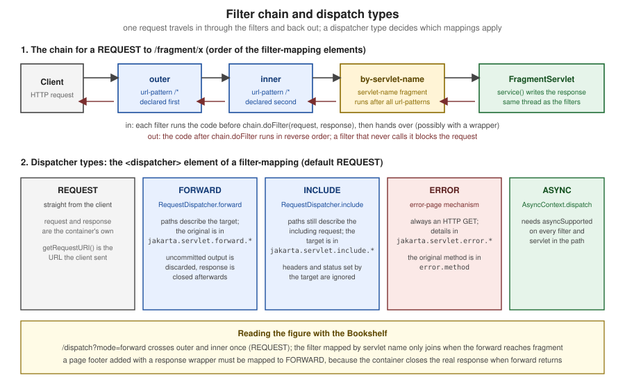

Servlet Fundamentals
|
This content was generated with the assistance of AI and should be verified against the official documentation before being relied on in production. |
This page is written against Jakarta Servlet 6.1 (Jakarta EE 11), the specification that Apache Tomcat 11.0.26 implements
together with Jakarta Pages 4.0, Jakarta Expression Language 6.0 and Jakarta Standard Tag Library 3.0, on Java 21 (the
specifications need Java 17 or later). Everything was verified on 2026-10-08: the facts against the Servlet 6.1
specification, its Javadoc and the Tomcat 11.0 documentation, and every example by building it into a Maven WAR and running
it on Tomcat 11.0.26 with curl; the outputs shown are the outputs that run produced. Servlets are the layer underneath
both halves of this section. A JSP is translated into a servlet (JSP Lifecycle and Translation), and Struts 7 is a filter plus a set of servlet-API
calls, so the vocabulary on this page (request, response, scope, filter, dispatcher, mapping, error page) is the
vocabulary the rest of the section uses. The running scenario is the Bookshelf, a small catalogue of books that grows
from a servlet that lists three titles into an application with sessions, cookies, filters, listeners, error pages and a
cover-image upload.
What a Servlet Is and Where It Runs
A servlet is a Java class that a servlet container (Tomcat, Jetty, GlassFish, WildFly and others) instantiates, calls and
destroys, in order to turn a request into a response. The specification defines the contract between container and
application: the Servlet interface, the request and response objects, the application-wide ServletContext, the
packaging of a web application as a WAR, and the deployment descriptor web.xml. Almost every Java web technology
sits on top of that contract. A JSP page is compiled into an HttpJspPage servlet, Struts 2 installs a servlet filter,
Spring MVC is a single DispatcherServlet, and the Jakarta Faces runtime is the FacesServlet.
The container does the work that is the same for every application: it listens on a socket, parses HTTP, selects the web application and the servlet from the URL, manages threads, tracks sessions, applies filters, handles errors and cleans up. The application supplies only the code that is different.
| Servlet | Jakarta EE | Tomcat line | Notes |
|---|---|---|---|
6.1 |
EE 11 |
11.0.x (Java 17 or later) |
Current. Pages 4.0, EL 6.0. Redirect control, |
6.0 |
EE 10 |
10.1.x (Java 11 or later) |
Removed the long-deprecated API ( |
5.0 |
EE 9 |
10.0.x (end of life 2022-10-31) |
Only the namespace change |
4.0 |
EE 8 |
9.0.x (Java 8 or later; end of support not before 2027-03-31) |
Last |
3.1 |
Java EE 7 |
8.5.x (end of life 2024-03-31) |
Non-blocking I/O, protocol upgrade; this is what many 2015-era tutorials target |
A web application written for the servlet API needs only two Maven dependencies at compile time, both with scope
provided because the container supplies them. The Bookshelf of this page uses the same pom.xml shape as the Getting
Started page of this section.
<dependency>
<groupId>jakarta.servlet</groupId>
<artifactId>jakarta.servlet-api</artifactId>
<version>6.1.0</version>
<scope>provided</scope>
</dependency>The Bookshelf Used on This Page
All the examples below are classes of one WAR, deployed under the context path /g2-servlet on Tomcat 11.0.26 with the
WAR file named g2-servlet.war. The classes live in the package org.example.bookshelf; imports and the
package line are left out of the listings. The table lists what each class demonstrates and where the page explains it.
| Class | Mapping | Concept |
|---|---|---|
|
|
|
|
|
parameters, headers, locale, character encoding |
|
|
response buffer, commit, late header changes |
|
|
redirect status codes, Post/Redirect/Get, CSRF token, path info |
|
|
scopes, |
|
various |
chain order, request and response wrappers, dispatcher types, blocking filters |
|
(none) |
context, session, attribute and binding events, programmatic registration |
|
|
forward, include, named dispatcher, error dispatch |
|
|
mapping rules, |
|
|
multipart, async, trace, context-root mapping |
The HTTP Contract Behind a Servlet
Servlets implement a thin layer over HTTP, so a few protocol facts decide how every servlet is written. HTTP is a
request/response protocol: the client sends a request line, headers and optionally a body, and the server answers with a
status line, headers and a body. It is stateless: nothing in the protocol links two requests, which is why the servlet
API adds sessions on top. The raw exchange for a form POST to the example’s /search servlet is:
curl -sv -d 'title=Dune&tag=sf' http://localhost:18080/g2-servlet/search -o /dev/null> POST /g2-servlet/search HTTP/1.1
> Host: localhost:18080
> Accept: */*
> Content-Length: 17
> Content-Type: application/x-www-form-urlencoded
>
< HTTP/1.1 200
< Content-Type: text/plain;charset=UTF-8
< Content-Length: 302Every line maps to an accessor of HttpServletRequest or a setter of HttpServletResponse: the method and path are
getMethod() and getRequestURI(), Host is getServerName(), Content-Type is getContentType(), and the body is
the source of getParameter. The same facts, in table form:
| GET | POST | |
|---|---|---|
Meaning |
Retrieve a representation; safe and idempotent |
Submit data for processing; changes state |
Data |
In the query string, visible in logs, history and |
In the body, |
Servlet method |
|
|
Caching and bookmarks |
Cacheable, bookmarkable, repeatable by crawlers and prefetchers |
Not cached; a browser asks before re-sending |
Never use it for |
Anything with a side effect, or secrets in the URL |
Idempotent lookups that people want to bookmark |
Answer after success |
200 with the representation |
303 redirect to a GET (Post/Redirect/Get) |
Servlets are hosted by a servlet container: a server such as Tomcat that implements the Servlet contract and adds
HTTP connectors, class loading, session management and deployment. Applets, which ran in the browser, played the other role in
1990s pages; servlets run only on the server and send the browser plain HTML or data.
Source: RFC 9110 — HTTP Semantics
The Servlet Lifecycle and the Threading Model
The container manages every servlet through a fixed lifecycle expressed by three methods of the Servlet interface.
HttpServlet and GenericServlet implement it, so an application normally overrides init() (the no-argument
convenience), a doXxx method and destroy().
| Phase | Container call | What the application should know |
|---|---|---|
Load and instantiate |
the class is loaded and a public no-argument constructor runs |
At startup or lazily on the first request. |
Initialize |
|
Read init parameters, open expensive resources. If it throws |
Serve |
|
|
Destroy |
|
Release resources. It runs at undeploy or shutdown, or when an |
The rule that shapes every design is in section 2.2 of the specification: unless the application is marked
distributable, the container uses one instance per servlet declaration. Every request that reaches that declaration
runs on a different thread but calls the same object. Fields of a servlet are therefore shared mutable state, exactly as
if they were static.
@WebServlet(urlPatterns = "/lifecycle", loadOnStartup = 1,
initParams = @WebInitParam(name = "greeting", value = "Hello from init"))
public class LifecycleServlet extends HttpServlet {
private final AtomicInteger hits = new AtomicInteger(); // shared by every request thread
private String greeting; // written once in init, read-only afterwards
@Override
public void init() throws ServletException {
greeting = getInitParameter("greeting");
EventLog.of(getServletContext()).add("LifecycleServlet.init, instance " + System.identityHashCode(this));
}
@Override
protected void doGet(HttpServletRequest req, HttpServletResponse resp) throws IOException {
resp.setContentType("text/plain;charset=UTF-8");
resp.getWriter().printf("%s%ninstance=%d hits=%d thread=%s%n", greeting,
System.identityHashCode(this), hits.incrementAndGet(), Thread.currentThread().getName());
}
@Override
public void destroy() {
getServletContext().log("LifecycleServlet.destroy after " + hits.get() + " hits");
}
}The shared counter is an AtomicInteger, and greeting is written once in init before any request thread can see the
servlet, so both are safe. Requesting the servlet three times, and then sixty more requests that the container served on
twenty parallel client connections, shows one instance and a count that never loses an update:
curl -s http://localhost:18080/g2-servlet/lifecycle
seq 1 60 | xargs -P 20 -I{} curl -s -o /dev/null http://localhost:18080/g2-servlet/lifecycle
curl -s http://localhost:18080/g2-servlet/lifecycle | tail -1Hello from init
instance=1266317426 hits=2 thread=http-nio-18080-exec-18
instance=1266317426 hits=64 thread=http-nio-18080-exec-17The instance number is identical in every response, while the thread names (http-nio-18080-exec-N) are different
threads of Tomcat’s pool. The servlet was marked loadOnStartup = 1, so init ran at deployment, before the first
request: the trace servlet of the example (/log) shows it, and redeploying the WAR makes Tomcat call destroy, which
the example writes to Tomcat’s application log with ServletContext.log:
contextInitialized: 3 books, title=Bookshelf
LifecycleServlet.init, instance 1266317426
...
INFO [Catalina-utility-2] org.apache.catalina.core.ApplicationContext.log LifecycleServlet.destroy after 64 hitsThe specification states the thread-safety rules in several places. They are collected here because they are the source of most production bugs.
| Object | Thread-safe? | Rule |
|---|---|---|
Servlet and filter instances |
shared by all requests |
Keep fields immutable or thread-safe; never store per-request data in fields. The specification advises against synchronizing |
|
no |
Objects vended from the request or response must be assumed non-thread-safe (section 7.7.1); hand them to another thread only through |
|
the container protects its own structure |
The objects you store are your responsibility: two requests of one user can run at once (two browser tabs, an AJAX call) |
|
the container protects the map |
Stored objects must be thread-safe, as in the example |
Listener instances |
one instance per declaration |
Application-scoped listeners need the same care as servlets |
SingleThreadModel, the old escape hatch that made a container serialize calls to a servlet, was deprecated for years and
removed in Servlet 6.0. A legacy servlet that implements it no longer compiles against the 6.x API; the fix is to remove
the instance state, not to add synchronized to every method.
An UnavailableException thrown from service tells the container that the servlet cannot serve, permanently or for a
number of seconds. The container then answers 404 (permanent) or 503 with a Retry-After header (temporary) without
calling the servlet, and it is allowed to treat both kinds as permanent.
HttpServlet, HTTP Methods and Method Handling
HttpServlet.service reads the HTTP method and calls the matching method. A servlet overrides only the methods it supports,
and the base class answers the rest.
| Method | Behaviour |
|---|---|
|
Safe, idempotent retrieval. Override |
|
Form submissions and state changes; the usual target of a Post/Redirect/Get flow |
|
Servlet 6.0 added |
|
By default calls |
|
Answers with an |
|
Echoes the request, excluding the headers |
CONNECT |
A proxy method. By default the container rejects it with 501 and never passes it to a filter or servlet |
A method the servlet does not override is answered by the base class, as the example shows with LifecycleServlet,
which has only doGet:
curl -sI http://localhost:18080/g2-servlet/lifecycle | head -2
curl -si -X POST http://localhost:18080/g2-servlet/lifecycle | head -1
curl -si -X OPTIONS http://localhost:18080/g2-servlet/lifecycle | grep -i '^allow'
curl -si -X TRACE http://localhost:18080/g2-servlet/lifecycle | head -1HTTP/1.1 200
Content-Type: text/plain;charset=UTF-8
HTTP/1.1 405
Allow: GET, HEAD, OPTIONS
HTTP/1.1 405HEAD works without any code, POST gets 405, and OPTIONS reports exactly the methods the class implements. TRACE
never reaches doTrace, because Tomcat’s HTTP connector rejects it with 405 unless the connector attribute allowTrace is set.
Requests: Parameters, Headers, Paths and Attributes
An HttpServletRequest gives the servlet read access to everything the client sent and a small writable map of
attributes. The accessors fall into five groups.
| Group | Methods and rules |
|---|---|
Request line |
|
Path elements |
|
Parameters |
|
Headers |
|
Body and connection |
|
Attributes |
|
The one rule about parameters that surprises people is ordering. Parameters are parsed on the first call to any parameter
method, and a form body can be consumed only once. If a servlet or filter reads the body with getReader() or
getInputStream() first, the container has nothing left to parse and getParameter returns null for form fields. In
Servlet 6.1 a failure during parsing (a malformed body, an exceeded limit) makes the parameter methods throw a runtime
exception, so a filter that touches parameters must be prepared to catch it (specification change log, issue 431).
The next servlet prints what the container exposes for a request. It is mapped to /search and, as the filter section will
show, runs behind a request wrapper that trims whitespace around every parameter value.
@WebServlet("/search")
public class SearchServlet extends HttpServlet {
@Override
protected void doGet(HttpServletRequest req, HttpServletResponse resp) throws IOException {
handle(req, resp);
}
@Override
protected void doPost(HttpServletRequest req, HttpServletResponse resp) throws IOException {
handle(req, resp);
}
private void handle(HttpServletRequest req, HttpServletResponse resp) throws IOException {
resp.setContentType("text/plain"); // the charset comes from web.xml (UTF-8)
PrintWriter out = resp.getWriter();
out.println("method=" + req.getMethod() + " query=" + req.getQueryString());
out.println("request encoding=" + req.getCharacterEncoding() + " type=" + req.getContentType());
out.println("title=" + req.getParameter("title"));
out.println("tag=" + Arrays.toString(req.getParameterValues("tag")));
Map<String, String[]> sorted = new TreeMap<>(req.getParameterMap());
sorted.forEach((k, v) -> out.println(" param " + k + " -> " + Arrays.toString(v)));
out.println("Accept-Language=" + req.getHeader("Accept-Language"));
out.println("locale=" + req.getLocale() + " locales=" + Collections.list(req.getLocales()));
out.println("Accept (all values)=" + Collections.list(req.getHeaders("Accept")));
out.println("User-Agent present=" + (req.getHeader("User-Agent") != null));
out.println("response encoding=" + resp.getCharacterEncoding() + " locale=" + resp.getLocale()
+ " (" + Locale.getDefault() + " default)");
}
}curl -s -H 'Accept-Language: es-ES,es;q=0.9,en;q=0.5' \
'http://localhost:18080/g2-servlet/search?title=%20Dune%20&tag=sf&tag=classic'method=GET query=title=%20Dune%20&tag=sf&tag=classic
request encoding=UTF-8 type=null
title=Dune
tag=[sf, classic]
param tag -> [sf, classic]
param title -> [Dune]
Accept-Language=es-ES,es;q=0.9,en;q=0.5
locale=es_ES locales=[es_ES, es, en]
Accept (all values)=[*/*]
User-Agent present=true
response encoding=UTF-8 locale=en_US (en_US default)getQueryString() returns the raw text, getParameter("title") returns the decoded and trimmed value Dune,
getParameterValues("tag") keeps both values in order, and getLocales() returns the client’s languages in preference
order. The request encoding line is UTF-8 and the type is null because the deployment descriptor of the example
sets <request-character-encoding>, as the next section explains.
Reading Headers: Content Negotiation in a Controller
Headers drive content negotiation. The BookServlet of the example serves the same catalogue as HTML or JSON depending on
the Accept header, and sets Vary: Accept so that a shared cache keeps the two representations apart.
protected void doGet(HttpServletRequest req, HttpServletResponse resp) throws ServletException, IOException {
Catalogue catalogue = Catalogue.of(getServletContext());
String info = req.getPathInfo(); // null for /books, "/2" for /books/2
if (info == null || info.equals("/")) {
req.setAttribute("books", catalogue.all());
req.setAttribute("csrf", csrfToken(req.getSession()));
if (wantsJson(req)) {
resp.setContentType("application/json");
resp.setHeader("Vary", "Accept");
resp.getWriter().write(toJson(catalogue));
return;
}
resp.setHeader("Vary", "Accept");
req.getRequestDispatcher("/WEB-INF/views/books.jsp").forward(req, resp);
return;
}
long id;
try {
id = Long.parseLong(info.substring(1));
} catch (NumberFormatException e) {
resp.sendError(HttpServletResponse.SC_BAD_REQUEST, "Book ids are numbers");
return;
}
Optional<Book> book = catalogue.find(id);
if (book.isEmpty()) {
resp.sendError(HttpServletResponse.SC_NOT_FOUND);
return;
}
req.setAttribute("book", book.get());
req.getRequestDispatcher("/WEB-INF/views/book.jsp").forward(req, resp);
}curl -si -H 'Accept: application/json' http://localhost:18080/g2-servlet/books | sed -n 1,5p
curl -si http://localhost:18080/g2-servlet/books/99 | sed -n 1,2p
curl -si http://localhost:18080/g2-servlet/books/abc | sed -n 1,2pHTTP/1.1 200
Set-Cookie: JSESSIONID=B190D8D3...; Path=/g2-servlet; HttpOnly; SameSite=Lax
Vary: Accept
Content-Type: application/json;charset=UTF-8
[{"id":1,"title":"Dune","author":"Frank Herbert","year":1965},...]
HTTP/1.1 404
HTTP/1.1 400The Set-Cookie line appears because the servlet calls req.getSession() to create the CSRF token; the next sections
explain that header. /books/99 is answered by sendError(404) and /books/abc by sendError(400, ...), and the error
page mechanism described later renders both.
Character Encoding
Encoding is the most common reason for garbled accented characters in a servlet application, and the specification’s defaults are older than the web.
| Situation | Rule |
|---|---|
Request body, |
The container must decode with US-ASCII and treat |
Any other request body without charset |
ISO-8859-1, unless the application or container configured something else |
Configure the request encoding |
|
Response with no encoding set |
ISO-8859-1 for the writer |
Configure the response encoding |
|
URL path and query string |
Decoded as UTF-8 per section 12.1; containers may offer a vendor option (Tomcat’s connector has |
Servlet 6.1 API |
|
A request that did not declare a charset is the dangerous one, because curl, many mobile clients and hand-written
fetch calls omit it. The example declares both encodings once for the whole application:
<request-character-encoding>UTF-8</request-character-encoding>
<response-character-encoding>UTF-8</response-character-encoding>Posting Ñandú in UTF-8 to /search shows the effect, and /search-legacy, which forces the old default with the Servlet
6.1 Charset overload, shows the "before":
@WebServlet("/search-legacy")
public class LegacyEncodingServlet extends HttpServlet {
@Override
protected void doPost(HttpServletRequest req, HttpServletResponse resp) throws IOException {
req.setCharacterEncoding(StandardCharsets.ISO_8859_1); // Servlet 6.1 overload taking a Charset
resp.setContentType("text/plain;charset=UTF-8");
resp.getWriter().println("title=" + req.getParameter("title"));
}
}curl -s -d 'title=Ñandú' http://localhost:18080/g2-servlet/search | sed -n 3p
curl -s -d 'title=Ñandú' http://localhost:18080/g2-servlet/search-legacy
curl -s --data-binary 'title=Ñandú' -H 'Content-Type: application/x-www-form-urlencoded; charset=ISO-8859-1' \
http://localhost:18080/g2-servlet/search | sed -n 3ptitle=Ñandú
title=Ãandú
title=ÃandúThe second line is the classic mojibake: UTF-8 bytes decoded as ISO-8859-1. The third line shows that an explicit charset
in the Content-Type header of the request wins over the default of web.xml, so a client that declares the wrong charset
is believed. curl -d sends no charset at all; that is what browsers do for plain form posts, which is why the
<request-character-encoding> default matters. JSP pages declare their own encodings (pageEncoding,
contentType) and Character Encoding covers that side.
Responses: Status, Headers, Body and Buffering
The response is the mirror image of the request. A servlet sets the status, adds headers, and writes the body to a
PrintWriter (getWriter(), characters) or a ServletOutputStream (getOutputStream(), bytes). It may use one or the
other for a response, never both, or the second call throws IllegalStateException.
| Group | Methods and rules |
|---|---|
Status |
|
Headers |
|
Type and encoding |
|
Cookies and URLs |
|
Buffer |
|
Redirect |
|
The container may buffer output. The status line and headers are written to the wire when the response is committed:
the buffer fills, flushBuffer() is called, the content length is reached, or sendError or sendRedirect is called.
Before the commit the servlet may change anything (reset() clears body, status and headers, resetBuffer() clears only
the body); after it, the rules are unforgiving. The next servlet exercises each of them.
@WebServlet("/buffer")
public class BufferServlet extends HttpServlet {
@Override
protected void doGet(HttpServletRequest req, HttpServletResponse resp) throws IOException {
resp.setContentType("text/plain;charset=UTF-8");
resp.setBufferSize(16 * 1024); // a hint: the container may give more, never less
PrintWriter out = resp.getWriter();
out.println("bufferSize>=16384: " + (resp.getBufferSize() >= 16 * 1024));
switch (String.valueOf(req.getParameter("mode"))) {
case "reset" -> {
out.println("draft that will be discarded");
resp.resetBuffer(); // clears the body, keeps status and headers
out.println("final body, committed=" + resp.isCommitted());
}
case "late-header" -> {
out.println("first line");
resp.flushBuffer(); // commits: status line and headers are on the wire
resp.setHeader("X-Too-Late", "1"); // silently ignored
resp.setStatus(500); // silently ignored
out.println("committed=" + resp.isCommitted());
}
case "late-error" -> {
out.println("first line");
resp.flushBuffer();
try {
resp.sendError(500, "too late");
} catch (IllegalStateException e) {
out.println("sendError after commit -> IllegalStateException");
}
try {
resp.resetBuffer();
} catch (IllegalStateException e) {
out.println("resetBuffer after commit -> IllegalStateException");
}
}
case "late-session" -> {
out.println("first line");
resp.flushBuffer();
try {
req.getSession(); // would need a Set-Cookie header
out.println("session created, id from cookie=" + req.isRequestedSessionIdFromCookie());
} catch (IllegalStateException e) {
out.println("getSession after commit -> IllegalStateException");
}
}
default -> out.println("modes: reset, late-header, late-error, late-session");
}
}
}curl -si 'http://localhost:18080/g2-servlet/buffer?mode=reset'
curl -si 'http://localhost:18080/g2-servlet/buffer?mode=late-header'
curl -si 'http://localhost:18080/g2-servlet/buffer?mode=late-error'
curl -si 'http://localhost:18080/g2-servlet/buffer?mode=late-session'HTTP/1.1 200
Content-Type: text/plain;charset=UTF-8
Content-Length: 28
final body, committed=falseHTTP/1.1 200
Content-Type: text/plain;charset=UTF-8
Transfer-Encoding: chunked
bufferSize>=16384: true
first line
committed=truebufferSize>=16384: true
first line
sendError after commit -> IllegalStateException
resetBuffer after commit -> IllegalStateExceptionbufferSize>=16384: true
first line
getSession after commit -> IllegalStateExceptionThe four outputs are the lesson of this section. With reset, the draft text and the earlier bufferSize line are gone
and the response is a normal 200 with a Content-Length computed from what remained. With late-header, the
setHeader("X-Too-Late", ...) and setStatus(500) calls after flushBuffer() were silently ignored: there is no
X-Too-Late header, the status is still 200, and the body switched to chunked transfer because the length was unknown at
commit time. With late-error and late-session, the calls that cannot be honoured throw IllegalStateException:
sendError, sendRedirect, reset, resetBuffer and the creation of a session (which needs a Set-Cookie header).
The specification calls this out for setBufferSize too, which must be called before any content is written.
The practical rules are: do all the work that can fail before writing, set headers and status first, create the session
before writing, and call sendError or sendRedirect and then return. Frameworks such as Struts (Architecture & Request Lifecycle) and Spring MVC
follow these rules by writing the view last.
Redirects, Including the Servlet 6.1 Controls
sendRedirect writes a Location header, sets a redirect status and commits the response. Before Servlet 6.1 the status was
always 302 and the container always generated the body. Servlet 6.1 (issue 74) adds overloads that choose the status and
control whether the buffer is cleared.
| Signature | Behaviour |
|---|---|
|
302, buffer cleared, short hypertext body generated by the container |
|
302, and |
|
The status you choose, for example 303, 307 or 308 |
|
Both |
Relative locations are accepted. The specification (issue 275) lets a container send them as given, and Tomcat 11 does so by
default unless the system property org.apache.catalina.STRICT_SERVLET_COMPLIANCE is true; it is controlled per context by
useRelativeRedirects. A relative location without a leading slash is resolved against the current request URI, one with a
leading slash against the container root, which is why the example builds the target from getContextPath().
@WebServlet("/redirects")
public class RedirectServlet extends HttpServlet {
@Override
protected void doGet(HttpServletRequest req, HttpServletResponse resp) throws IOException {
String target = req.getContextPath() + "/books";
switch (String.valueOf(req.getParameter("mode"))) {
case "default" -> resp.sendRedirect(target); // 302
case "relative" -> resp.sendRedirect("books"); // relative to this request URI
case "303" -> resp.sendRedirect(target, HttpServletResponse.SC_SEE_OTHER); // 6.1: choose the status
case "308" -> resp.sendRedirect(target, HttpServletResponse.SC_PERMANENT_REDIRECT); // 6.1 constant for 308
case "keep-body" -> {
resp.setContentType("text/plain;charset=UTF-8");
resp.getWriter().print("my own redirect body");
resp.sendRedirect(target, HttpServletResponse.SC_TEMPORARY_REDIRECT, false); // 6.1: do not clear the buffer
}
case "bad" -> resp.sendRedirect("http://[bad host"); // not a valid URL
default -> resp.sendError(HttpServletResponse.SC_BAD_REQUEST, "unknown mode");
}
}
}for m in default relative 303 308 keep-body bad; do
curl -si "http://localhost:18080/g2-servlet/redirects?mode=$m" | sed -n '1,2p;/^Content-Length/p'
doneHTTP/1.1 302
Location: /g2-servlet/books
Content-Length: 0
HTTP/1.1 302
Location: books
Content-Length: 0
HTTP/1.1 303
Location: /g2-servlet/books
Content-Length: 0
HTTP/1.1 308
Location: /g2-servlet/books
Content-Length: 0
HTTP/1.1 307
Location: /g2-servlet/books
Content-Length: 20
HTTP/1.1 302
Location: http://[bad host
Content-Length: 0The keep-body response (the last one) carries the 20 bytes my own redirect body that the servlet wrote, because the
false argument stopped the container from clearing them. The Location values are relative, Tomcat’s default; the
relative mode shows that the container passes the string through unchanged. The specification says a location that cannot
be converted to a valid URL makes sendRedirect throw IllegalArgumentException; Tomcat 11.0.26, with relative redirects
enabled, did not reject the malformed http://[bad host that the bad mode sends (the last response above).
The status code matters for forms. After a POST that changed state, answer with 303 See Other so the browser follows
with a GET and a refresh cannot repeat the post (the Post/Redirect/Get pattern). 307 and 308 instruct the client to repeat
the same method and body, which is right for moving an API endpoint but wrong for form submissions. BookServlet.doPost
uses sendRedirect(..., SC_SEE_OTHER) and the walkthrough at the end of this page shows it.
Scopes and the ServletContext
Data in a servlet application lives in one of four scopes, each with its own lifetime and sharing. The scope names are the same ones JSP and EL use, so the model built by a servlet is what the view reads.
| Scope | Object | Lifetime | Visible to |
|---|---|---|---|
Page |
|
one execution of one JSP page |
that page and its tags (covered by Implicit Objects & Scopes) |
Request |
|
one request, including its forwards and includes |
every servlet, filter and JSP that handles that request |
Session |
|
until timeout, |
every request of one client in this web application |
Application |
|
until the web application stops |
everything in the web application, all users |
The ServletContext is the application’s window on the container. There is one per web application per JVM
(section 4.2), reachable from a servlet with getServletContext(), from a filter or listener through its config or event, and
from a JSP as the application object.
| Facility | Methods and rules |
|---|---|
Attributes |
|
Initialization parameters |
|
Resources |
|
Information |
|
MIME types |
|
Dispatching |
|
Logging |
|
Session defaults |
|
Encoding defaults |
|
Programmatic configuration |
|
Temporary directory |
the attribute |
The next servlet touches each of the four scopes and prints the facts the context knows:
@WebServlet("/scopes")
public class ScopesServlet extends HttpServlet {
@Override
protected void doGet(HttpServletRequest req, HttpServletResponse resp) throws IOException {
ServletContext ctx = getServletContext();
resp.setContentType("text/plain;charset=UTF-8");
PrintWriter out = resp.getWriter();
req.setAttribute("who", "request"); // gone when this request ends
HttpSession session = req.getSession(); // creates the session on first use
AtomicInteger perSession = (AtomicInteger) session.getAttribute("count");
if (perSession == null) {
perSession = new AtomicInteger();
session.setAttribute("count", perSession); // survives across requests of one client
}
int total = ((AtomicInteger) ctx.getAttribute("visits")).incrementAndGet(); // shared by everyone
out.println("request attribute who=" + req.getAttribute("who"));
out.println("session count=" + perSession.incrementAndGet() + " (new=" + session.isNew() + ")");
out.println("application visits=" + total);
out.println("servlet API " + ctx.getMajorVersion() + "." + ctx.getMinorVersion()
+ ", effective " + ctx.getEffectiveMajorVersion() + "." + ctx.getEffectiveMinorVersion());
out.println("context path=" + ctx.getContextPath() + " name=" + ctx.getServletContextName());
out.println("context-param catalogue.title=" + ctx.getInitParameter("catalogue.title"));
out.println("mime of cover.png=" + ctx.getMimeType("cover.png") + ", of feed.rss=" + ctx.getMimeType("feed.rss"));
out.println("session timeout (minutes)=" + ctx.getSessionTimeout());
out.println("request/response encoding=" + ctx.getRequestCharacterEncoding() + "/" + ctx.getResponseCharacterEncoding());
out.println("resource /WEB-INF/web.xml exists=" + (ctx.getResource("/WEB-INF/web.xml") != null));
out.println("resource /WEB-INF/../secret exists=" + (ctx.getResourceAsStream("/WEB-INF/../secret") != null));
}
}curl -s -c jar -b jar http://localhost:18080/g2-servlet/scopes # first request of this client
curl -s -c jar -b jar http://localhost:18080/g2-servlet/scopes | sed -n 1,3p
curl -s http://localhost:18080/g2-servlet/scopes | sed -n 1,3p # another client, no cookierequest attribute who=request
session count=1 (new=true)
application visits=1
servlet API 6.1, effective 6.1
context path=/g2-servlet name=Bookshelf servlet fundamentals
context-param catalogue.title=Bookshelf
mime of cover.png=image/png, of feed.rss=application/rss+xml
session timeout (minutes)=30
request/response encoding=UTF-8/UTF-8
resource /WEB-INF/web.xml exists=true
resource /WEB-INF/../secret exists=falserequest attribute who=request
session count=2 (new=false)
application visits=2request attribute who=request
session count=1 (new=true)
application visits=3The session count belongs to the cookie jar: the same client sees 2, a client without the cookie starts again at 1. The
application count belongs to the context and keeps growing across clients. The feed.rss MIME type comes from the
<mime-mapping> in the example’s web.xml, and the traversal attempt in the last line is refused: the path
/WEB-INF/../secret yields null. Treat any path that includes user input as hostile and never pass it to getResource
without checking it against an allowlist.
Sessions
HTTP is stateless, so the container associates requests of one client through a session id. The HttpSession interface hides
the mechanism. Cookies are the mechanism every container must support, URL rewriting is the fallback, and an SSL session id
is a third, rarely used option.
| Mechanism | How it works | Notes |
|---|---|---|
Cookie |
The container sends a cookie named |
Required of every container. Configure |
URL rewriting |
The id is appended to the path as |
Exposes the id in logs, bookmarks, |
SSL session |
The TLS session identifies the client |
Container specific and rarely used |
The session lifecycle is: created lazily by request.getSession() (or getSession(true)); looked up without creating by
getSession(false), which returns null when there is none; replaced on privilege change with changeSessionId(); ended by
invalidate() or by the idle timeout. A session is new until the client has returned the cookie, so the first request is
the only one on which isNew() is true, and a servlet must work when the client never joins the session.
Timeouts have two scales: ServletContext.setSessionTimeout and <session-timeout> use minutes, while
HttpSession.setMaxInactiveInterval uses seconds, and a zero or negative value means the session never expires.
The Cart class stores the books a visitor picked, and the CartServlet exercises the API:
public class Cart implements Serializable, HttpSessionBindingListener {
private static final long serialVersionUID = 1L;
private final List<Long> bookIds = new ArrayList<>();
public synchronized void add(long id) {
bookIds.add(id);
}
public synchronized List<Long> ids() {
return List.copyOf(bookIds);
}
@Override
public void valueBound(HttpSessionBindingEvent event) {
EventLog.of(event.getSession().getServletContext()).add("Cart bound as " + event.getName());
}
@Override
public void valueUnbound(HttpSessionBindingEvent event) {
EventLog.of(event.getSession().getServletContext()).add("Cart unbound from " + event.getName());
}
}Objects stored in a session follow a few rules that come from the container, not from the language. They should be small and
Serializable (the container may persist or replicate the session; Tomcat’s standard manager preserves sessions across restarts when its
pathname attribute is set), thread-safe or guarded, because the same session can serve two requests at once, and well-behaved JavaBeans
(public no-argument constructor, getXxx/isXxx/setXxx accessors) when a JSP is going to read them through EL. An object that
needs to know when it joins or leaves a session implements HttpSessionBindingListener, as Cart does; one that holds
non-serializable resources implements HttpSessionActivationListener to drop and re-acquire them around passivation. The bean
conventions themselves are covered by Standard Actions & JavaBeans.
@WebServlet("/cart")
public class CartServlet extends HttpServlet {
@Override
protected void doGet(HttpServletRequest req, HttpServletResponse resp) throws IOException {
HttpSession session = req.getSession();
Cart cart = (Cart) session.getAttribute("cart");
resp.setContentType("text/plain;charset=UTF-8");
PrintWriter out = resp.getWriter();
out.println("new=" + session.isNew() + " idFromCookie=" + req.isRequestedSessionIdFromCookie()
+ " idFromURL=" + req.isRequestedSessionIdFromURL() + " valid=" + req.isRequestedSessionIdValid());
out.println("maxInactiveInterval(s)=" + session.getMaxInactiveInterval());
out.println("cart=" + (cart == null ? "empty" : cart.ids()));
out.println("encodeURL=" + resp.encodeURL(req.getContextPath() + "/cart"));
out.println("encodeRedirectURL=" + resp.encodeRedirectURL(req.getContextPath() + "/books"));
}
@Override
protected void doPost(HttpServletRequest req, HttpServletResponse resp) throws IOException {
String action = String.valueOf(req.getParameter("action"));
HttpSession session = req.getSession();
switch (action) {
case "add" -> {
Cart cart = (Cart) session.getAttribute("cart");
if (cart == null) {
cart = new Cart();
session.setAttribute("cart", cart);
}
cart.add(Long.parseLong(req.getParameter("book")));
}
case "rotate" -> req.changeSessionId(); // new id, same attributes: do it after any privilege change
case "timeout" -> session.setMaxInactiveInterval(Integer.parseInt(req.getParameter("seconds")));
case "logout" -> session.invalidate(); // listeners run, attributes are unbound
default -> {
resp.sendError(HttpServletResponse.SC_BAD_REQUEST, "unknown action");
return;
}
}
resp.sendRedirect(req.getContextPath() + "/cart", HttpServletResponse.SC_SEE_OTHER);
}
}J=jar; B=http://localhost:18080/g2-servlet
curl -s -c $J -b $J $B/cart
curl -si -c $J -b $J -d 'action=add&book=1' $B/cart | head -3
curl -s -c $J -b $J -d 'action=add&book=3' -L $B/cart | sed -n 3p
curl -s -c $J -b $J -d 'action=rotate' -L $B/cart | sed -n 1,3p
curl -s -c $J -b $J -d 'action=timeout&seconds=120' -L $B/cart | sed -n 2p
curl -s -c $J -b $J -d 'action=logout' -L $B/cart | head -4new=false idFromCookie=true idFromURL=false valid=true
maxInactiveInterval(s)=1800
cart=empty
encodeURL=/g2-servlet/cart
encodeRedirectURL=/g2-servlet/books
HTTP/1.1 303
Location: /g2-servlet/cart
Content-Length: 0
new=false idFromCookie=true idFromURL=false valid=true
maxInactiveInterval(s)=1800
cart=[1, 3]
new=false idFromCookie=true idFromURL=false valid=true
maxInactiveInterval(s)=1800
cart=[1, 3]
maxInactiveInterval(s)=120
new=true idFromCookie=true idFromURL=false valid=false
maxInactiveInterval(s)=1800
cart=empty
encodeURL=/g2-servlet/cartThe session id after rotate ends in a different four characters (...0D4E before, ...AD5F after) while the cart keeps
its content: changeSessionId() swaps the identifier and keeps the attributes. After logout, the browser still presents the old
cookie, so idFromCookie=true and valid=false tell the servlet that the id it was given is dead, and a fresh, empty
session replaced it. Every state change is a POST answered by a 303 redirect.
The listeners of the example record what the container did (an excerpt of the /log trace, the listener section shows the code):
sessionCreated, active=4
Cart bound as cart
session attribute added: cart
sessionIdChanged (old id ends ...0D4E)
sessionDestroyed, active=3
session attribute removed: count
Cart unbound from cart
session attribute removed: cartsessionIdChanged fires when changeSessionId() runs, and invalidate() produces sessionDestroyed and unbinds every
attribute, calling valueUnbound on Cart.
Session Security and Configuration
Four settings decide whether session handling is safe, and web.xml expresses all of them:
<session-config>
<session-timeout>30</session-timeout>
<cookie-config>
<http-only>true</http-only>
<attribute>
<attribute-name>SameSite</attribute-name>
<attribute-value>Lax</attribute-value>
</attribute>
</cookie-config>
<tracking-mode>COOKIE</tracking-mode>
</session-config>| Risk | Defence in the servlet API |
|---|---|
Session fixation: an attacker plants a known id, the victim logs in |
Call |
Session id in the URL |
Restrict tracking to cookies with |
Cookie theft by script |
|
Cookie sent on the wire in clear text or cross-site |
|
Idle sessions that never die |
|
Non-serializable attributes in a clustered or persistent store |
|
Using a session outside a request (WebSocket, background threads) |
New in 6.1: |
To see URL rewriting, the same WAR was deployed a second time without the <tracking-mode> element, and a client that does not
yet hold a cookie asked for /cart:
curl -si http://localhost:18080/g2-servlet-var/cart | grep -i 'set-cookie\|encode'Set-Cookie: JSESSIONID=F669A335...; Path=/g2-servlet-var; HttpOnly; SameSite=Lax
encodeURL=/g2-servlet-var/cart;jsessionid=F669A335...
encodeRedirectURL=/g2-servlet-var/books;jsessionid=F669A335...Until the container sees the cookie come back it cannot know that the client accepts cookies, so it makes encodeURL add the
id to every link of that first page. The id then appears in the HTML, in any Referer header and in server logs. On the second
request, with the cookie, encodeURL returned the plain path. With <tracking-mode>COOKIE</tracking-mode> (the g2-servlet
deployment) the rewriting never happens, which is the right choice for any site that does not need to serve cookieless
clients.
Cookies
A cookie is a name and value that the server asks the client to store and return. HttpServletResponse.addCookie emits a
Set-Cookie header, HttpServletRequest.getCookies() reads the Cookie header and returns null when there is none. A browser
sends back only the name and value, never the attributes, so getCookies() objects have no path, age or HttpOnly flag
that you could inspect.
Servlet 6.0 moved the Cookie class from RFC 2109 to RFC 6265 and introduced generic attributes (issue 175): any attribute
can be set with setAttribute(name, value), which is how SameSite and Partitioned are written, and 6.1 clarified valueless
attributes such as HttpOnly, Secure and Partitioned (issue 571). setComment and setVersion are deprecated for
removal because RFC 6265 no longer has them.
| Attribute | API | Meaning |
|---|---|---|
|
|
URL prefix that receives the cookie; default is the request path of the response, so set it explicitly (the context path) |
|
|
Host scope; leave it unset for a host-only cookie, which is the safest |
|
|
Positive: persistent for that long. Negative (default): browser session only. Zero: delete (use the same name and path) |
|
|
Hidden from JavaScript |
|
|
Sent only over HTTPS |
|
|
|
|
|
Opts the cookie into partitioned third-party storage; an empty value writes the bare attribute |
@WebServlet("/prefs")
public class PrefsServlet extends HttpServlet {
private static final Set<String> THEMES = Set.of("light", "dark");
@Override
protected void doGet(HttpServletRequest req, HttpServletResponse resp) throws IOException {
resp.setContentType("text/plain;charset=UTF-8");
String theme = req.getParameter("theme");
if (theme != null) {
if (!THEMES.contains(theme)) { // never copy raw input into a cookie value
resp.sendError(HttpServletResponse.SC_BAD_REQUEST, "unknown theme");
return;
}
Cookie cookie = new Cookie("theme", theme);
cookie.setPath(req.getContextPath().isEmpty() ? "/" : req.getContextPath());
cookie.setMaxAge(30 * 24 * 60 * 60); // seconds; -1 = browser session, 0 = delete
cookie.setHttpOnly(true);
cookie.setSecure(req.isSecure()); // Secure only makes sense over HTTPS
cookie.setAttribute("SameSite", "Lax"); // Servlet 6.0: generic cookie attributes
if ("1".equals(req.getParameter("partitioned"))) {
cookie.setAttribute("Partitioned", ""); // attribute without a value
}
resp.addCookie(cookie);
resp.getWriter().println("theme cookie set to " + theme);
} else if ("1".equals(req.getParameter("clear"))) {
Cookie cookie = new Cookie("theme", "");
cookie.setPath(req.getContextPath().isEmpty() ? "/" : req.getContextPath());
cookie.setMaxAge(0); // same name and path, or the browser keeps the old one
resp.addCookie(cookie);
resp.getWriter().println("theme cookie cleared");
} else {
Cookie[] cookies = req.getCookies(); // null when the request has no Cookie header
String current = "none";
if (cookies != null) {
for (Cookie c : cookies) {
if (c.getName().equals("theme")) {
current = c.getValue();
}
}
}
resp.getWriter().println("theme=" + current + " (browsers send only name and value back)");
}
}
}curl -si 'http://localhost:18080/g2-servlet/prefs?theme=dark' | grep -i set-cookie
curl -si 'http://localhost:18080/g2-servlet/prefs?theme=dark&partitioned=1' | grep -i set-cookie
curl -s -H 'Cookie: theme=dark; JSESSIONID=x' http://localhost:18080/g2-servlet/prefs
curl -si 'http://localhost:18080/g2-servlet/prefs?theme=%3Cscript%3E' | head -1
curl -si 'http://localhost:18080/g2-servlet/prefs?clear=1' | grep -i set-cookieSet-Cookie: theme=dark; Expires=Sat, 07 Nov 2026 10:24:32 GMT; Max-Age=2592000; Path=/g2-servlet; HttpOnly; SameSite=Lax
Set-Cookie: theme=dark; Expires=Sat, 07 Nov 2026 10:24:32 GMT; Max-Age=2592000; Path=/g2-servlet; HttpOnly; SameSite=Lax; Partitioned
theme=dark (browsers send only name and value back)
HTTP/1.1 400
Set-Cookie: theme=; Expires=Thu, 01 Jan 1970 00:00:10 GMT; Path=/g2-servletThe first two lines show the SameSite and Partitioned attributes written exactly as the Javadoc table says. The value
is validated against an allowlist before it reaches Set-Cookie, because cookie values built from request input are a
header-injection and session-poisoning vector. The last line is how a cookie is deleted: same name and path, expiry in the
past. The Secure flag is false in the example only because the scratch Tomcat speaks plain HTTP; on a real site always keep
it on, and prefer server-side sessions for anything that identifies a user.
Filters, Wrappers and the Filter Chain
A filter is an object that intercepts requests to a servlet, a JSP or a static file, and responses on the way back. It can
inspect or reject the request, wrap the request or response to change what later components see, and post-process the
response. Authentication, logging, compression, character-encoding fixes, CORS headers and page layout (SiteMesh) are all
filters, and so is the Struts 2 entry point, StrutsPrepareAndExecuteFilter (see Architecture & Request Lifecycle).
| Member | Rule |
|---|---|
|
Called once per declaration before the first request; |
|
Called for every matching request, on the same thread as the servlet. Calls |
|
Called once when the filter is removed from service |
One instance |
One instance per |
Declaring and Ordering Filters
A filter is declared with @WebFilter or a <filter> element, and attached with <filter-mapping> to URL patterns or
servlet names. The order of the chain is defined by the specification (section 6.2.4): first all <url-pattern> mappings
that match the request, in the order they appear in web.xml, then all <servlet-name> mappings that match, in the order
they appear. The last filter calls the servlet. The order of filters declared only by annotations is unspecified, so a
chain whose order matters needs web.xml (or programmatic registration, where isMatchAfter controls the position).
The Bookshelf declares three instances of one timing filter, all with <async-supported>, in this order: a mapping by
servlet name (written first), then outer and inner for /*:
public class TimingFilter implements Filter {
private ServletContext ctx;
private String label;
@Override
public void init(FilterConfig config) {
ctx = config.getServletContext();
label = config.getInitParameter("label");
}
@Override
public void doFilter(ServletRequest request, ServletResponse response, FilterChain chain)
throws IOException, ServletException {
HttpServletRequest req = (HttpServletRequest) request;
boolean trace = req.getHeader("X-Trace") != null;
long start = System.nanoTime();
if (trace) {
EventLog.of(ctx).add(label + " before " + req.getDispatcherType() + " " + req.getRequestURI());
}
try {
chain.doFilter(request, response); // everything after this line runs on the way back
} finally {
if (trace) {
EventLog.of(ctx).add(label + " after (" + (System.nanoTime() - start) / 1000 + " us)");
}
}
}
}<filter>
<filter-name>by-servlet-name</filter-name>
<filter-class>org.example.bookshelf.TimingFilter</filter-class>
<async-supported>true</async-supported>
<init-param><param-name>label</param-name><param-value>by-servlet-name</param-value></init-param>
</filter>The full list of mappings, in declared order, is:
<!-- Declared first, but matched by servlet name, so it runs after every url-pattern match. -->
<filter-mapping>
<filter-name>by-servlet-name</filter-name>
<servlet-name>fragment</servlet-name>
<dispatcher>REQUEST</dispatcher>
<dispatcher>FORWARD</dispatcher>
</filter-mapping>
<filter-mapping>
<filter-name>outer</filter-name>
<url-pattern>/*</url-pattern>
</filter-mapping>
<filter-mapping>
<filter-name>inner</filter-name>
<url-pattern>/*</url-pattern>
</filter-mapping>
<filter-mapping>
<filter-name>trim</filter-name>
<url-pattern>/search</url-pattern>
</filter-mapping>
<filter-mapping>
<filter-name>footer</filter-name>
<url-pattern>/WEB-INF/views/*</url-pattern>
<dispatcher>FORWARD</dispatcher>
</filter-mapping>A request that carries the header X-Trace makes the filters write to the trace, which /log shows:
curl -s -H 'X-Trace: 1' http://localhost:18080/g2-servlet/fragment/x -o /dev/null
curl -s http://localhost:18080/g2-servlet/logouter before REQUEST /g2-servlet/fragment/x
inner before REQUEST /g2-servlet/fragment/x
DispatchTrace saw REQUEST /g2-servlet/fragment/x
by-servlet-name before REQUEST /g2-servlet/fragment/x
by-servlet-name after (160 us)
inner after (313 us)
outer after (328 us)The picture matches the figure below: outer and inner (url-pattern mappings, in file order) run before the filter that was
declared first but matches by servlet name, and the code after chain.doFilter runs in reverse. DispatchTraceFilter is
declared by annotation only, so its position relative to the XML-declared filters is the container’s choice; in Tomcat 11 it ran
after the XML url-pattern filters, but the specification does not promise that.

Dispatcher Types: Why a Filter Does Not Run on a Forward
A <filter-mapping> without <dispatcher> elements applies to REQUEST only. A filter that must also see forwards, includes,
error pages or asynchronous dispatches names them explicitly; with annotations the attribute is dispatcherTypes.
| Value | When the filter runs |
|---|---|
|
The request comes straight from the client. This is the default when no |
|
The request is processed under a |
|
Under a |
|
The resource is an error page invoked by the error page mechanism |
|
Under an |
The annotated DispatchTraceFilter lists all of them for the paths of the next examples:
@WebFilter(urlPatterns = {"/dispatch", "/fragment/*", "/errors/*", "/boom"},
dispatcherTypes = {DispatcherType.REQUEST, DispatcherType.FORWARD, DispatcherType.INCLUDE, DispatcherType.ERROR})
public class DispatchTraceFilter implements Filter {
@Override
public void doFilter(ServletRequest request, ServletResponse response, FilterChain chain)
throws IOException, ServletException {
HttpServletRequest req = (HttpServletRequest) request;
if (req.getHeader("X-Trace") != null) {
EventLog.of(req.getServletContext()).add("DispatchTrace saw " + req.getDispatcherType() + " "
+ req.getRequestURI());
}
chain.doFilter(request, response);
}
}Wrapping the Request
HttpServletRequestWrapper and HttpServletResponseWrapper implement the decorator pattern: a filter creates a subclass that
overrides a few methods, passes the wrapper to chain.doFilter, and every servlet, JSP and later filter sees the modified
behaviour without being aware of it. The container must pass the wrapper itself (or a wrapper of it) on to the next component
(section 6.2.2).
The TrimFilter below wraps the request so that every parameter value reaches the servlet already trimmed. A wrapper must
override all the accessors that expose the same data (getParameter, getParameterValues, getParameterMap, and
getParameterNames uses the unchanged keys), or code that uses the one you forgot sees the raw value.
public class TrimFilter implements Filter {
@Override
public void doFilter(ServletRequest request, ServletResponse response, FilterChain chain)
throws IOException, ServletException {
chain.doFilter(new TrimmedRequest((HttpServletRequest) request), response);
}
static final class TrimmedRequest extends HttpServletRequestWrapper {
TrimmedRequest(HttpServletRequest request) {
super(request);
}
@Override
public String getParameter(String name) {
String value = super.getParameter(name);
return value == null ? null : value.strip();
}
@Override
public String[] getParameterValues(String name) {
String[] values = super.getParameterValues(name);
return values == null ? null : Arrays.stream(values).map(String::strip).toArray(String[]::new);
}
@Override
public Map<String, String[]> getParameterMap() { // override all accessors, or the filter has holes
return super.getParameterMap().entrySet().stream().collect(Collectors.toMap(
Map.Entry::getKey, e -> Arrays.stream(e.getValue()).map(String::strip).toArray(String[]::new)));
}
}
}It is mapped only to /search and produced the trimmed title=Dune result shown in the request section, for a query string
that contained %20Dune%20.
Wrapping the Response and Why FORWARD Matters
A response wrapper captures the output of the rest of the chain so the filter can change it before it reaches the client:
compress it, rewrite links, decorate it with a layout. The FooterFilter buffers a page in a CharArrayWriter and appends an
HTML comment after the content of every text/html response:
public class FooterFilter implements Filter {
@Override
public void doFilter(ServletRequest request, ServletResponse response, FilterChain chain)
throws IOException, ServletException {
CapturingResponse wrapper = new CapturingResponse((HttpServletResponse) response);
chain.doFilter(request, wrapper);
String type = wrapper.getContentType();
if (wrapper.captured() != null && type != null && type.startsWith("text/html")) {
String html = wrapper.captured().toString();
response.getWriter().write(html);
response.getWriter().write("<!-- rendered by Bookshelf -->\n");
} else if (wrapper.captured() != null) {
response.getWriter().write(wrapper.captured().toString());
}
}
static final class CapturingResponse extends HttpServletResponseWrapper {
private CharArrayWriter buffer;
private PrintWriter writer;
CapturingResponse(HttpServletResponse response) {
super(response);
}
@Override
public PrintWriter getWriter() {
if (writer == null) {
buffer = new CharArrayWriter();
writer = new PrintWriter(buffer);
}
return writer;
}
CharArrayWriter captured() {
if (writer != null) {
writer.flush();
}
return buffer;
}
}
}The page it decorates is the output of a JSP, and the JSP is reached by a forward from BookServlet. The first version of
the mapping used the default REQUEST dispatcher on /books/*, and the result was an empty page:
HTTP/1.1 200
Content-Type: text/html;charset=UTF-8
Content-Length: 0The filter had captured the HTML (149 characters in the debug run), but it was written to a response that Tomcat had already
finished. The specification requires the container to send, commit and close the response before forward returns, and
Tomcat does that to the real response, not to the wrapper, so code that runs after chain.doFilter in a REQUEST filter is
too late. The fix is to run the filter around the forwarded resource. The final mapping applies the filter to the JSP views
under WEB-INF and only for the FORWARD dispatcher, as shown in the mapping list above (/WEB-INF/views/*,
<dispatcher>FORWARD</dispatcher>), and the page now ends with the footer:
curl -si http://localhost:18080/g2-servlet/books/1HTTP/1.1 200
Set-Cookie: JSESSIONID=5E99CAFF...; Path=/g2-servlet; HttpOnly; SameSite=Lax
Content-Type: text/html;charset=UTF-8
Content-Length: 178
<!DOCTYPE html>
<html>
<body>
<h1>Dune</h1>
<p>by Frank Herbert, 1965</p>
<p><a href="/g2-servlet/books">Back to the shelf</a></p>
</body>
</html>
<!-- rendered by Bookshelf -->Layout frameworks such as SiteMesh use exactly this arrangement, and the Tiles & Page Layouts page of this section comes back to
it. Two details of the wrapper above are worth copying into any real one: it implements only getWriter (a page that calls
getOutputStream needs a second path), and it never sets Content-Length, because the length changes after the filter
appends text.
A Filter That Blocks: Authentication and Authorization
A filter that does not call chain.doFilter ends the request. The AdminFilter protects /admin/* and
the LoginServlet shows the safe login sequence (validate, rotate the session id, store the identity, redirect):
@WebFilter("/admin/*")
public class AdminFilter implements Filter {
@Override
public void doFilter(ServletRequest request, ServletResponse response, FilterChain chain)
throws IOException, ServletException {
HttpServletRequest req = (HttpServletRequest) request;
HttpServletResponse resp = (HttpServletResponse) response;
HttpSession session = req.getSession(false);
if (session == null || session.getAttribute("user") == null) {
resp.sendError(HttpServletResponse.SC_UNAUTHORIZED, "Sign in first");
return;
}
chain.doFilter(request, response);
}
}@WebServlet("/login")
public class LoginServlet extends HttpServlet {
private static final Pattern USER = Pattern.compile("[a-z]{3,20}");
@Override
protected void doPost(HttpServletRequest req, HttpServletResponse resp) throws IOException {
String user = req.getParameter("user");
if (user == null || !USER.matcher(user).matches()) {
resp.sendError(HttpServletResponse.SC_BAD_REQUEST);
return;
}
req.getSession();
req.changeSessionId(); // new id at the moment of login: no session fixation
req.getSession().setAttribute("user", user);
resp.sendRedirect(req.getContextPath() + "/admin/stats", HttpServletResponse.SC_SEE_OTHER);
}
}@WebServlet("/admin/stats")
public class AdminServlet extends HttpServlet {
@Override
protected void doGet(HttpServletRequest req, HttpServletResponse resp) throws IOException {
resp.setContentType("text/plain;charset=UTF-8");
resp.getWriter().println("admin area for " + req.getSession().getAttribute("user")
+ ", active sessions=" + getServletContext().getAttribute("activeSessions"));
}
}B=http://localhost:18080/g2-servlet; J=jar
curl -si $B/admin/stats | head -1
curl -si -c $J -b $J -d 'user=ROOT!' $B/login | head -1
curl -si -c $J -b $J -d 'user=alice' $B/login | sed -n '1p;3p'
curl -s -c $J -b $J $B/admin/statsHTTP/1.1 401
HTTP/1.1 400
HTTP/1.1 303
Location: /g2-servlet/admin/stats
admin area for alice, active sessions=1A role filter has the same shape: after the identity check it compares a stored role set, or request.isUserInRole(role) when
the container authenticates, and answers 403 instead of 401. A logging or auditing filter is the TimingFilter shape, and the
content-rewriting filter is the FooterFilter above.
This identity check is a teaching stub. Real applications use container-managed authentication (<login-config>,
<security-constraint>, HttpServletRequest.login), the Jakarta Security API or Spring Security, which handle credentials,
password storage and role mapping; Security covers the container mechanisms (Servlet chapter 13).
Source: OWASP — Session fixation
Listeners: Application, Session and Request Events
Listeners are classes that the container calls when something happens in the web application. They are how an application starts and stops its own resources, counts sessions, and reacts to attribute changes.
| Interface | Events | Typical use |
|---|---|---|
|
|
Load configuration and seed data, create thread pools and clients, register servlets and filters programmatically; stop them on shutdown |
|
attribute added, removed, replaced on the context |
Audit or react to application-scope changes |
|
|
Count active users, release per-user resources |
|
attribute added, removed, replaced on a session |
Track what is stored in sessions |
|
|
Audit |
|
|
Implemented by a session attribute, to release and re-acquire non-serializable resources when a clustered or persistent container moves the session (for example a Tomcat manager configured to keep sessions across restarts) |
|
|
Implemented by the attribute object itself ( |
|
|
Per-request set-up and tear-down, for example thread-local cleanup |
|
attribute added, removed, replaced on a request |
Debugging and auditing |
|
|
Registered on an |
Registration is by @WebListener, by a <listener> element, or programmatically with ServletContext.addListener. Listener
instances are created once per declaration, so they follow the same thread-safety rules as servlets. The order in which the
container calls listeners of the same type is the order of declaration in web.xml; annotation-declared ones are not ordered. A
listener that throws during contextInitialized prevents the application from starting.
The AppListener of the example loads the catalogue from WEB-INF at startup, publishes the shared objects as context
attributes, and registers a servlet programmatically. The SessionTracker counts sessions:
@WebListener
public class AppListener implements ServletContextListener, ServletContextAttributeListener {
@Override
public void contextInitialized(ServletContextEvent event) {
ServletContext ctx = event.getServletContext();
EventLog log = new EventLog();
ctx.setAttribute(EventLog.ATTRIBUTE, log);
Catalogue catalogue = new Catalogue();
try (InputStream in = ctx.getResourceAsStream("/WEB-INF/catalogue.csv");
BufferedReader reader = new BufferedReader(new InputStreamReader(in, StandardCharsets.UTF_8))) {
reader.lines().skip(1).map(l -> l.split(";")).forEach(
f -> catalogue.add(f[0], f[1], Integer.parseInt(f[2])));
} catch (IOException e) {
throw new UncheckedIOException(e);
}
ctx.setAttribute(Catalogue.ATTRIBUTE, catalogue);
ctx.setAttribute("visits", new AtomicInteger());
ctx.setAttribute("activeSessions", new AtomicInteger());
// Programmatic registration is allowed here because this listener is annotated (not added programmatically).
ctx.addServlet("ping", PingServlet.class).addMapping("/ping");
log.add("initializer found filters: " + ctx.getAttribute("filtersFound"));
log.add("contextInitialized: " + catalogue.all().size() + " books, title=" + ctx.getInitParameter("catalogue.title"));
}
@Override
public void contextDestroyed(ServletContextEvent event) {
EventLog.of(event.getServletContext()).add("contextDestroyed");
}
@Override
public void attributeAdded(ServletContextAttributeEvent event) {
if (!"eventLog".equals(event.getName())) {
EventLog.of(event.getServletContext()).add("context attribute added: " + event.getName());
}
}
}@WebListener
public class SessionTracker implements HttpSessionListener, HttpSessionAttributeListener, HttpSessionIdListener {
private static AtomicInteger active(HttpSessionEvent e) {
return (AtomicInteger) e.getSession().getServletContext().getAttribute("activeSessions");
}
@Override
public void sessionCreated(HttpSessionEvent e) {
int n = active(e).incrementAndGet();
EventLog.of(e.getSession().getServletContext()).add("sessionCreated, active=" + n);
}
@Override
public void sessionDestroyed(HttpSessionEvent e) {
int n = active(e).decrementAndGet();
EventLog.of(e.getSession().getServletContext()).add("sessionDestroyed, active=" + n);
}
@Override
public void sessionIdChanged(HttpSessionEvent e, String oldSessionId) {
EventLog.of(e.getSession().getServletContext()).add("sessionIdChanged (old id ends ..."
+ oldSessionId.substring(oldSessionId.length() - 4) + ")");
}
@Override
public void attributeAdded(HttpSessionBindingEvent e) {
EventLog.of(e.getSession().getServletContext()).add("session attribute added: " + e.getName());
}
@Override
public void attributeRemoved(HttpSessionBindingEvent e) {
EventLog.of(e.getSession().getServletContext()).add("session attribute removed: " + e.getName());
}
}public class PingServlet extends HttpServlet {
@Override
protected void doGet(HttpServletRequest req, HttpServletResponse resp) throws IOException {
resp.setContentType("text/plain;charset=UTF-8");
resp.getWriter().println("pong from " + getServletName());
}
}The startup trace and the programmatic servlet:
curl -s http://localhost:18080/g2-servlet/log | head -5
curl -s http://localhost:18080/g2-servlet/pingcontext attribute added: catalogue
context attribute added: visits
context attribute added: activeSessions
contextInitialized: 3 books, title=Bookshelf
LifecycleServlet.init, instance 1266317426
pong from pingThe order of the lines is informative. The ServletContextAttributeListener events for catalogue, visits and
activeSessions come before the "contextInitialized" line, because the attributes are added inside
contextInitialized and the log line is written at its end. LifecycleServlet.init runs afterwards because
loadOnStartup servlets are initialized once all context listeners have run. The /ping servlet, which has no entry
anywhere in the WAR, answers because addServlet(...).addMapping("/ping") ran during initialization; the spec allows the call
because AppListener is declared in the application (annotated or in web.xml), whereas a listener that was itself added
programmatically may not register servlets. Registration after initialization throws IllegalStateException.
Annotations Versus web.xml
Since Servlet 3.0 a web application does not need a web.xml at all: servlets, filters, listeners and multipart settings can
be declared on the classes. The two mechanisms describe the same metadata, and the specification defines how they combine.
| Annotation | web.xml element |
Notes |
|---|---|---|
|
|
Needs |
|
|
|
|
|
Listener type is detected from the interfaces the class implements |
|
|
Used inside |
|
|
Enables |
|
|
Covered by Security |
|
(none) |
Only for a |
The merging rules (section 8.2.3) fit in five sentences. Annotations are read only from classes in WEB-INF/classes and in
JARs in WEB-INF/lib. The web.xml of the application has the highest precedence and overrides conflicting values of
annotations and fragments. metadata-complete="true" on the web-app element turns off annotation scanning and fragment
processing. A servlet declared both ways under the same name is one servlet with the XML values winning, while the same
class declared under different names is two instances, as the MappingServlet example does on purpose. When the
order of filters, servlets (by load-on-startup) or listeners matters, it must come from web.xml; listeners of one kind
are called in declaration order, and contextDestroyed, requestDestroyed and sessionDestroyed in reverse order.
The 6.1 schema and the document header that the example uses are:
<?xml version="1.0" encoding="UTF-8"?>
<web-app xmlns="https://jakarta.ee/xml/ns/jakartaee"
xmlns:xsi="http://www.w3.org/2001/XMLSchema-instance"
xsi:schemaLocation="https://jakarta.ee/xml/ns/jakartaee https://jakarta.ee/xml/ns/jakartaee/web-app_6_1.xsd"
version="6.1">Source: Jakarta Servlet 6.1 — 8.2.3 Assembling the Descriptor from web.xml, web-fragment.xml and Annotations
Source: Jakarta EE — web-app_6_1.xsd
Pluggability: Fragments and ServletContainerInitializer
Frameworks plug into a web application without touching web.xml. A library JAR in WEB-INF/lib can carry a
META-INF/web-fragment.xml that contributes servlets, filters and listeners (ordered with <ordering> or the application’s
<absolute-ordering>), static resources under META-INF/resources, and a ServletContainerInitializer registered in
META-INF/services/jakarta.servlet.ServletContainerInitializer. The container calls onStartup(Set<Class<?>>, ServletContext)
before any listener, passing every class that matches the @HandlesTypes annotation of the initializer. This is how Spring’s
SpringServletContainerInitializer, Jasper and Jakarta Faces start themselves, and why a JAR on the classpath can change the
behaviour of an application.
The example has a tiny initializer, registered through the services file, that records which filters the container found:
@HandlesTypes(Filter.class)
public class ScanInitializer implements ServletContainerInitializer {
@Override
public void onStartup(Set<Class<?>> classes, ServletContext ctx) {
List<String> names = classes == null ? List.of()
: classes.stream().map(Class::getSimpleName).sorted().toList();
ctx.setAttribute("filtersFound", names);
}
}WEB-INF/classes/META-INF/services/jakarta.servlet.ServletContainerInitializer:
org.example.bookshelf.ScanInitializerinitializer found filters: [AdminFilter, DispatchTraceFilter, FooterFilter, TimingFilter, TrimFilter]
contextInitialized: 3 books, title=BookshelfThe first line is written by AppListener from the attribute the initializer set: the initializer ran first and saw the five
filter classes of the WAR, annotated or not.
RequestDispatcher: Forward, Include and Named Dispatch
A RequestDispatcher hands the current request to another resource inside the same container: a servlet, a JSP, a static file. It is
the mechanism behind the Model 2 pattern (built out in MVC with Servlets & JSP): a controller servlet prepares the model as request attributes and forwards to a JSP
that renders it (the BookServlet of this page does so). It comes from request.getRequestDispatcher(path) (the path may be
relative to the current servlet), ServletContext.getRequestDispatcher(path) (must start with /) or
ServletContext.getNamedDispatcher(name) (a servlet name from web.xml or @WebServlet(name=...)). A path can carry a query
string, and the container merges the new parameters with the original ones, the new values first.
forward |
include |
sendRedirect |
|
|---|---|---|---|
What the client sees |
one response, original URL |
one response, original URL |
a 3xx and a second request to a new URL |
Request and attributes |
same request; model attributes survive |
same request; model attributes survive |
lost (new request); use the session or a flash mechanism |
Response handling |
uncommitted output is discarded and the response is committed and closed when |
the target appends to the output but cannot change status or headers (calls are ignored) |
no body of its own |
Path methods |
describe the target |
still describe the including request |
not applicable |
Request attributes added |
|
|
none |
Allowed when committed |
throws |
yes |
throws |
Typical use |
controller to view |
page fragments, headers and footers |
after a state-changing |
The DispatchServlet and FragmentServlet of the example exercise every variation. FragmentServlet prints what it sees:
@WebServlet(name = "fragment", urlPatterns = "/fragment/*")
public class FragmentServlet extends HttpServlet {
@Override
protected void doGet(HttpServletRequest req, HttpServletResponse resp) throws IOException {
resp.setContentType("text/plain;charset=UTF-8");
resp.setHeader("X-Ignored", "set-by-fragment"); // ignored when this servlet is being included
PrintWriter out = resp.getWriter();
out.println("-- fragment: dispatcher=" + req.getDispatcherType() + " uri=" + req.getRequestURI()
+ " servletPath=" + req.getServletPath() + " pathInfo=" + req.getPathInfo()
+ " query=" + req.getQueryString());
for (String name : List.of(RequestDispatcher.FORWARD_REQUEST_URI, RequestDispatcher.FORWARD_QUERY_STRING,
RequestDispatcher.FORWARD_MAPPING, RequestDispatcher.INCLUDE_REQUEST_URI,
RequestDispatcher.INCLUDE_QUERY_STRING, RequestDispatcher.INCLUDE_SERVLET_PATH)) {
Object value = req.getAttribute(name);
out.println(" " + name + " = " + (value instanceof jakarta.servlet.http.HttpServletMapping m
? m.getMappingMatch() + ":" + m.getPattern() : value));
}
out.println(" from parameter=" + req.getParameter("from"));
}
}@WebServlet("/dispatch")
public class DispatchServlet extends HttpServlet {
@Override
protected void doGet(HttpServletRequest req, HttpServletResponse resp) throws ServletException, IOException {
resp.setContentType("text/plain;charset=UTF-8");
String mode = String.valueOf(req.getParameter("mode"));
switch (mode) {
case "forward" -> {
resp.getWriter().println("this text is discarded: forward clears the uncommitted buffer");
req.getRequestDispatcher("/fragment/view?from=forward").forward(req, resp);
}
case "include" -> {
PrintWriter out = resp.getWriter();
out.println("before include");
req.getRequestDispatcher("/fragment/view?from=include").include(req, resp);
out.println("after include, status=" + resp.getStatus() + " header X-Ignored=" + resp.getHeader("X-Ignored"));
}
case "named" -> getServletContext().getNamedDispatcher("fragment").forward(req, resp);
case "forward-after-commit" -> {
resp.getWriter().println("committed");
resp.flushBuffer();
try {
req.getRequestDispatcher("/fragment/view").forward(req, resp);
} catch (IllegalStateException e) {
resp.getWriter().println("forward after commit -> IllegalStateException");
}
}
case "missing" -> {
RequestDispatcher d = req.getRequestDispatcher("/does/not/exist");
resp.getWriter().println("dispatcher for an unknown path is never null here: " + (d != null));
}
default -> resp.sendError(HttpServletResponse.SC_BAD_REQUEST, "modes: forward, include, named, forward-after-commit, missing");
}
}
}B=http://localhost:18080/g2-servlet
curl -s "$B/dispatch?mode=forward&p=1"
curl -s "$B/dispatch?mode=include"
curl -s "$B/dispatch?mode=named&x=1"
curl -s "$B/dispatch?mode=forward-after-commit"-- fragment: dispatcher=FORWARD uri=/g2-servlet/fragment/view servletPath=/fragment pathInfo=/view query=from=forward
jakarta.servlet.forward.request_uri = /g2-servlet/dispatch
jakarta.servlet.forward.query_string = mode=forward&p=1
jakarta.servlet.forward.mapping = EXACT:/dispatch
jakarta.servlet.include.request_uri = null
jakarta.servlet.include.query_string = null
jakarta.servlet.include.servlet_path = null
from parameter=forwardbefore include
-- fragment: dispatcher=INCLUDE uri=/g2-servlet/dispatch servletPath=/dispatch pathInfo=null query=mode=include
jakarta.servlet.forward.request_uri = null
jakarta.servlet.forward.query_string = null
jakarta.servlet.forward.mapping = null
jakarta.servlet.include.request_uri = /g2-servlet/fragment/view
jakarta.servlet.include.query_string = from=include
jakarta.servlet.include.servlet_path = /fragment
from parameter=include
after include, status=200 header X-Ignored=null-- fragment: dispatcher=FORWARD uri=/g2-servlet/dispatch servletPath=/dispatch pathInfo=null query=mode=named&x=1
jakarta.servlet.forward.request_uri = null
...
from parameter=nullcommitted
forward after commit -> IllegalStateExceptionThe four outputs show the differences in the table. In the forward, the path methods describe the target
(/fragment/view), the original request is in the forward.* attributes, the text the dispatcher wrote before forwarding is gone,
and from is forward, the new query parameter. In the include, the opposite holds: getRequestURI() is still
/g2-servlet/dispatch, the target’s path is in the include.* attributes, and the header the fragment tried to set
(X-Ignored) never arrived. A resource that must know its real path when it can be included therefore reads the attribute
first and falls back to the method. In the named dispatch the target sees the original path and no forward attributes at
all, because no path was used. Forwarding after a flush is rejected.
The filter trace of a forward and of an include (X-Trace header, outer/inner use the default REQUEST mapping):
forward: outer before REQUEST /g2-servlet/dispatch
inner before REQUEST /g2-servlet/dispatch
DispatchTrace saw REQUEST /g2-servlet/dispatch
DispatchTrace saw FORWARD /g2-servlet/fragment/view
by-servlet-name before FORWARD /g2-servlet/fragment/view
by-servlet-name after (188 us)
inner after (399 us)
outer after (414 us)
include: outer before REQUEST /g2-servlet/dispatch
inner before REQUEST /g2-servlet/dispatch
DispatchTrace saw REQUEST /g2-servlet/dispatch
DispatchTrace saw INCLUDE /g2-servlet/dispatch
inner after (1336 us)
outer after (1362 us)outer and inner ran once, for the client request. DispatchTraceFilter, which lists all dispatcher types, saw the forward and the
include, and the filter mapped by servlet name and for FORWARD joined only when the forward reached fragment. The
include is not seen by by-servlet-name because that mapping lists only REQUEST and FORWARD. Note the URI printed for the
include: it is the including request’s.
URL Mapping Rules
The container maps a request to a servlet in two steps. It first picks the web application with the longest context path that
matches the start of the URL. Within the application it removes the context path and any path parameters (such as
;jsessionid=...), decodes the rest as UTF-8, and applies these rules in order, stopping at the first match:
| Step | Pattern form | Rule |
|---|---|---|
1 |
exact: a string such as |
The whole path equals the pattern |
2 |
path prefix: |
The longest prefix match, one directory at a time; the pattern matches |
3 |
extension: |
The last segment ends in |
4 |
default: |
The "default" servlet of the application (Tomcat’s |
special |
the empty string |
Exactly the context root, with or without the trailing slash; the servlet path is the empty string |
special |
the implicit |
When the container has a JSP engine, |
Matching is case sensitive. Patterns that mix wildcards (/WEB-INF/views/*.jsp) are invalid, and Tomcat refused to deploy the
example when it contained one: the log said Invalid <url-pattern> [/WEB-INF/views/*.jsp] in servlet mapping. If the same
pattern maps to two servlets in the effective configuration, deployment fails.
HttpServletRequest.getHttpServletMapping() (Servlet 4.0) reports how the match happened. MappingServlet prints it, and the
WAR declares the class three times in web.xml (once per pattern), so three instances exist:
public class MappingServlet extends HttpServlet {
@Override
protected void doGet(HttpServletRequest req, HttpServletResponse resp) throws IOException {
HttpServletMapping m = req.getHttpServletMapping();
resp.setContentType("text/plain;charset=UTF-8");
PrintWriter out = resp.getWriter();
out.println("servlet=" + getServletName() + " instance=" + System.identityHashCode(this));
out.println("match=" + m.getMappingMatch() + " pattern='" + m.getPattern() + "' matchValue='" + m.getMatchValue() + "'");
out.println("requestURI=" + req.getRequestURI());
out.println("contextPath='" + req.getContextPath() + "' servletPath='" + req.getServletPath()
+ "' pathInfo=" + req.getPathInfo());
}
}<servlet>
<servlet-name>mapping-exact</servlet-name>
<servlet-class>org.example.bookshelf.MappingServlet</servlet-class>
</servlet>
<servlet>
<servlet-name>mapping-prefix</servlet-name>
<servlet-class>org.example.bookshelf.MappingServlet</servlet-class>
</servlet>
<servlet>
<servlet-name>mapping-extension</servlet-name>
<servlet-class>org.example.bookshelf.MappingServlet</servlet-class>
</servlet>
<servlet-mapping>
<servlet-name>mapping-exact</servlet-name>
<url-pattern>/map/exact</url-pattern>
</servlet-mapping>B=http://localhost:18080/g2-servlet
curl -s $B/map/exact ; curl -s $B/map/a/b ; curl -s $B/reports/q1.reportservlet=mapping-exact instance=223862864
match=EXACT pattern='/map/exact' matchValue='map/exact'
requestURI=/g2-servlet/map/exact
contextPath='/g2-servlet' servletPath='/map/exact' pathInfo=null
servlet=mapping-prefix instance=1832380977
match=PATH pattern='/map/*' matchValue='a/b'
requestURI=/g2-servlet/map/a/b
contextPath='/g2-servlet' servletPath='/map' pathInfo=/a/b
servlet=mapping-extension instance=2010951165
match=EXTENSION pattern='*.report' matchValue='reports/q1'
requestURI=/g2-servlet/reports/q1.report
contextPath='/g2-servlet' servletPath='/reports/q1.report' pathInfo=nullThe three servletPath and pathInfo pairs are the key to reading paths: for an exact or extension match the servlet path is
the whole path and the path info is null; for a prefix match the servlet path is the prefix and the path info is the rest.
getContextPath() + getServletPath() + getPathInfo() rebuilds the URI. A controller mapped to /books/* reads the id from the
path info (/books/2 gives /2), as BookServlet does.
The complete outcome of many requests, on the deployed example:
| Request path | Handled by | Why |
|---|---|---|
|
|
exact match wins over the |
|
|
not exact; longest prefix |
|
|
the prefix rule precedes the extension rule |
|
|
no exact or prefix match; extension |
|
|
|
|
Tomcat’s JSP servlet |
implicit |
|
the |
declared with |
|
|
registered programmatically; |
|
nobody (404) |
the container never serves |
|
the default servlet, 404 |
no mapping, falls to rule 4 |
WAR Structure, WEB-INF and Welcome Files
A web application is a directory tree, usually packaged as a WAR (a JAR with the .war extension). The public part is the tree
below the root; everything under WEB-INF is private to the container.
jar tf g2-servlet.war, abridged)/ public: served as static files or mapped to servlets
├── hello.jsp a JSP in the public tree (reachable, implicit *.jsp mapping)
├── docs/index.html a directory with a welcome file
├── errors/readme.txt a plain static file
├── META-INF/MANIFEST.MF
└── WEB-INF/ never served to a client
├── web.xml the deployment descriptor
├── catalogue.csv private data read with getResourceAsStream
├── views/books.jsp JSP views, reachable only through a dispatcher
├── views/book.jsp
├── views/about.jsp
├── classes/org/example/bookshelf/*.class
├── classes/META-INF/services/jakarta.servlet.ServletContainerInitializer
└── lib/jakarta.servlet.jsp.jstl-api-3.0.2.jar, jakarta.servlet.jsp.jstl-3.0.1.jar| Location | Rule |
|---|---|
Application root |
Public static files and JSPs; a request for |
|
The deployment descriptor, optional since Servlet 3.0 |
|
Compiled classes and resources on the application’s class path, found before JARs; annotations are scanned here |
|
Libraries, including JARs with fragments, TLDs and |
|
Private. A request for |
|
Metadata of the archive; |
The Servlet API JAR |
Not in |
The test that confirmed the privacy of WEB-INF and the behaviour of directories and welcome files:
B=http://localhost:18080/g2-servlet
curl -s -o /dev/null -w '%{http_code}\n' $B/WEB-INF/web.xml
curl -s -o /dev/null -w '%{http_code}\n' $B/WEB-INF/views/books.jsp
curl -si $B/docs | head -2
curl -s $B/docs/404
404
HTTP/1.1 302
Location: /g2-servlet/docs/
<!DOCTYPE html>
<html><body><h1>Docs welcome page</h1></body></html>A welcome file answers a request for a directory. The web.xml lists them in order:
<welcome-file-list>
<welcome-file>index.html</welcome-file>
<welcome-file>default.jsp</welcome-file>
</welcome-file-list>For /docs (without the slash) the container redirects to /docs/, then appends index.html, finds a static file, and
serves it. If no static file matches, it tries the names as servlet mappings (default.jsp), and if nothing matches, the
container decides: a listing or a 404. Because the example maps the empty pattern to HomeServlet, the context root is
answered by that servlet and not by a welcome file, a case where the explicit mapping wins.
Deployment to Tomcat is a copy: drop g2-servlet.war into webapps/ (the context path is the file name without .war), use
the Manager application, or set unpackWARs/autoDeploy on the host. The Getting Started page of this section covers the
Maven, Jetty and Docker routes. For the javax to jakarta change, Tomcat 10 and later do not run javax.servlet code;
the Tomcat migration tool converts old WARs (see What’s Changed & Migration).
Source: Apache Tomcat 11 — Deployment
A Tour of the web.xml Elements the Bookshelf Uses
| Element | Purpose | In the example |
|---|---|---|
|
Name shown by tools; also |
"Bookshelf servlet fundamentals" |
|
Application-wide read-only parameter, |
|
|
Default encodings (Servlet 4.0 and later) |
UTF-8 for both |
|
Declare filters, give them an order and dispatcher types |
|
|
Declare listeners and give them an order ( |
annotations in the example |
|
Declare a servlet by class or by |
|
|
JSP property groups (encoding, whitespace trimming, scripting) and TLD mapping (Configuration and Property Groups); the Servlet 2.3 |
|
|
Timeout (minutes), cookie attributes, tracking modes |
30 minutes, |
|
Extension to MIME type |
|
|
Ordered welcome files |
|
|
Status code or exception type to a resource |
next section |
|
Upload limits, container security, JNDI references (data sources and others) |
upload is annotation-driven; security and JNDI belong to the JSP security page and to the persistence pages |
Precompiling JSPs at build time (JspC, with the Maven and Jetty plugins) and the Jasper options that map a precompiled page to a
URL are covered by Jasper Configuration & Precompilation; from the servlet point of view a precompiled JSP is simply
a servlet class plus a <servlet-mapping>, exactly like about.
The effect of the <jsp-config> group is visible in the views: the same books.jsp produced blank lines for every directive
and every c:forEach iteration before the group was added, and none afterwards.
Error Pages
When a servlet calls sendError or lets an exception escape, the container renders an error response. The <error-page>
element replaces the container’s default report with an application resource (the JSP side, with the errorPage attribute and isErrorPage, is in Error Handling; Struts maps exceptions to results instead, see Exception Handling and Global Results):
<error-page>
<error-code>404</error-code>
<location>/errors/generic</location>
</error-page>
<error-page>
<exception-type>java.sql.SQLException</exception-type>
<location>/errors/database</location>
</error-page>
<error-page>
<location>/errors/generic</location>
</error-page>The matching rules (section 10.9.2) are:
-
sendError(status): an<error-code>entry for that status. -
An exception that escapes: the
<exception-type>entry whose class is the closest in the class hierarchy. -
If none matches and the exception is a
ServletException, a second pass withgetRootCause(). -
Otherwise the default entry, an
<error-page>without code and type. -
Otherwise the container’s own page, with status 500 for uncaught exceptions.
The error page is invoked by an ERROR dispatch that always uses the HTTP method GET, whatever the original method was, with
the request path and attributes set as for a forward. Servlet 6.1 added jakarta.servlet.error.method for the original method
and jakarta.servlet.error.query_string.
| Attribute | Type | Content |
|---|---|---|
|
|
The status code |
|
|
The exception class (kept for old code; the exception attribute is more useful) |
|
|
The message passed to |
|
|
The exception that escaped |
|
|
The URI of the failing request |
|
|
6.1: the query string of the failing request |
|
|
The servlet that failed |
|
|
6.1: the original HTTP method |
ErrorServlet prints them, and BoomServlet produces each kind of failure:
@WebServlet(name = "errors", urlPatterns = {"/errors/generic", "/errors/database"})
public class ErrorServlet extends HttpServlet {
@Override
protected void doGet(HttpServletRequest req, HttpServletResponse resp) throws IOException {
Integer status = (Integer) req.getAttribute(RequestDispatcher.ERROR_STATUS_CODE);
resp.setContentType("text/plain;charset=UTF-8");
if (status != null) {
resp.setStatus(status); // an error page keeps the original status unless you set it
}
PrintWriter out = resp.getWriter();
out.println("error page " + req.getServletPath() + " dispatcher=" + req.getDispatcherType()
+ " handled-as=" + req.getMethod());
out.println("status=" + status);
out.println("message=" + req.getAttribute(RequestDispatcher.ERROR_MESSAGE));
out.println("exception_type=" + req.getAttribute(RequestDispatcher.ERROR_EXCEPTION_TYPE));
out.println("exception=" + req.getAttribute(RequestDispatcher.ERROR_EXCEPTION));
out.println("request_uri=" + req.getAttribute(RequestDispatcher.ERROR_REQUEST_URI));
out.println("query_string=" + req.getAttribute(RequestDispatcher.ERROR_QUERY_STRING));
out.println("servlet_name=" + req.getAttribute(RequestDispatcher.ERROR_SERVLET_NAME));
out.println("original method=" + req.getAttribute(RequestDispatcher.ERROR_METHOD));
}
}@WebServlet("/boom")
public class BoomServlet extends HttpServlet {
@Override
protected void service(HttpServletRequest req, HttpServletResponse resp) throws ServletException, IOException {
switch (String.valueOf(req.getParameter("kind"))) {
case "status" -> resp.sendError(HttpServletResponse.SC_FORBIDDEN, "no entry");
case "runtime" -> throw new IllegalStateException("catalogue exploded");
case "wrapped" -> throw new ServletException("lookup failed", new SQLException("db down"));
case "committed" -> {
resp.getWriter().println("partial page");
resp.flushBuffer();
throw new IllegalStateException("too late for an error page");
}
default -> resp.getWriter().println("kinds: status, runtime, wrapped, committed");
}
}
}B=http://localhost:18080/g2-servlet
for k in status runtime wrapped committed; do curl -si -X POST "$B/boom?kind=$k"; done
curl -si $B/nothing/hereHTTP/1.1 403
error page /errors/generic dispatcher=ERROR handled-as=GET
status=403
message=no entry
exception_type=null
exception=null
request_uri=/g2-servlet/boom
query_string=kind=status
servlet_name=org.example.bookshelf.BoomServlet
original method=POSTHTTP/1.1 500
error page /errors/generic dispatcher=ERROR handled-as=GET
status=500
message=
exception_type=null
exception=java.lang.IllegalStateException: catalogue exploded
request_uri=/g2-servlet/boom
query_string=kind=runtime
servlet_name=org.example.bookshelf.BoomServlet
original method=POSTHTTP/1.1 500
error page /errors/database dispatcher=ERROR handled-as=GET
status=500
message=lookup failed
exception_type=class java.sql.SQLException
exception=java.sql.SQLException: db down
request_uri=/g2-servlet/boom
query_string=kind=wrapped
servlet_name=org.example.bookshelf.BoomServlet
original method=POSTHTTP/1.1 200
Transfer-Encoding: chunked
partial page
curl: (18) transfer closed with outstanding read data remainingHTTP/1.1 404
error page /errors/generic dispatcher=ERROR handled-as=GET
status=404
message=The requested resource [/g2-servlet/nothing/here] is not available
exception_type=null
exception=null
request_uri=/g2-servlet/nothing/here
query_string=null
servlet_name=default
original method=GETThe outputs teach five things. The POST that failed was handled as GET with the original method in error.method. The
servlet_name identifies the component that failed, including default for a missing resource. For an escaped runtime exception
that matched the default entry, Tomcat 11 supplied the exception attribute but left exception_type null and the message empty,
so an error page should read error.exception. A ServletException wrapping a SQLException reached the /errors/database page
through the second, root-cause pass; the status was 500 in both. And when the response was already committed (committed), no error page can
run: the client got the partial page and a truncated chunked body (curl exits with 18), which is the visible symptom of an
exception after a flush.
When the same web.xml also declared <exception-type>java.lang.Throwable</exception-type>, the result for wrapped changed. That entry matches every
exception at the first pass, so the wrapped case never reached /errors/database and produced /errors/generic with
exception_type=class java.sql.SQLException: the root-cause pass is skipped whenever a broad type is declared. A catch-all belongs
in the entry without code and type.
The error page mechanism does not apply to exceptions thrown inside a RequestDispatcher call or to errors that the calling
filter handles itself, so a filter or servlet that dispatches gets the chance to deal with the error first. The error response
is also the place to avoid leaking information: Tomcat’s default report shows the exception and the server version unless
ErrorReportValve is configured (showReport, showServerInfo), so applications supply their own page and never print stack traces to users.
File Upload: @MultipartConfig and Part
A multipart/form-data request carries several parts, text fields and files. Since Servlet 3.0 the API reads them with
getParts() and getPart(name), which return Part objects; no third-party library is needed. A servlet must opt in, with
@MultipartConfig or <multipart-config>, or getPart throws.
| Attribute | Meaning |
|---|---|
|
Directory for temporary files and for |
|
Size above which a part is spooled to disk instead of memory |
|
Maximum size of one part; the default is unlimited, so always set it |
|
Maximum size of the whole request; unlimited by default, so always set it |
| Method | Notes |
|---|---|
|
The form field name |
|
The client’s file name, a hint for display only; browsers send only the file name, but a hostile client can send a path |
|
The client’s claim, not proof of the content |
|
Size and the content stream |
|
The part headers |
|
Persist to the |
UploadServlet accepts a book cover. It checks the request type, applies the limits through the annotation, treats text fields as
ordinary parameters, checks the declared type against an allowlist, ignores the client’s name for storage, and copies the stream to
a file name chosen by the server:
@WebServlet("/upload")
@MultipartConfig(location = "", fileSizeThreshold = 8 * 1024, maxFileSize = 64 * 1024, maxRequestSize = 128 * 1024)
public class UploadServlet extends HttpServlet {
private static final Set<String> TYPES = Set.of("image/png", "image/jpeg");
@Override
protected void doPost(HttpServletRequest req, HttpServletResponse resp) throws ServletException, IOException {
resp.setContentType("text/plain;charset=UTF-8");
String contentType = req.getContentType();
if (contentType == null || !contentType.toLowerCase().startsWith("multipart/form-data")) {
resp.sendError(HttpServletResponse.SC_UNSUPPORTED_MEDIA_TYPE, "multipart/form-data expected");
return;
}
Part cover;
String title;
try {
title = req.getParameter("title"); // text fields arrive as ordinary parameters
cover = req.getPart("cover");
} catch (IllegalStateException e) { // size limits exceeded
resp.setStatus(HttpServletResponse.SC_REQUEST_ENTITY_TOO_LARGE);
resp.getWriter().println("upload rejected: too large");
return;
}
if (cover == null || cover.getSize() == 0 || !TYPES.contains(cover.getContentType())) {
resp.sendError(HttpServletResponse.SC_UNSUPPORTED_MEDIA_TYPE, "send a PNG or JPEG in the cover part");
return;
}
String submitted = cover.getSubmittedFileName(); // the client's name: display only, never a file path
String display = submitted == null ? "" : Paths.get(submitted.replace('\\', '/')).getFileName().toString();
File dir = (File) getServletContext().getAttribute("jakarta.servlet.context.tempdir");
Path target = dir.toPath().resolve(UUID.randomUUID() + ".png"); // the server picks the stored name
try (InputStream in = cover.getInputStream()) {
Files.copy(in, target);
}
resp.getWriter().println("title=" + title + " cover=" + display + " type=" + cover.getContentType()
+ " bytes=" + cover.getSize() + " stored=" + Files.exists(target));
Files.delete(target);
}
}B=http://localhost:18080/g2-servlet
curl -si -F title=Dune -F 'cover=@cover.png;type=image/png;filename=../../etc/dune cover.png' $B/upload
curl -si -F title=Dune -F 'cover=@note.txt;type=text/plain' $B/upload | head -1
curl -si -F title=Dune -F 'cover=@big.png;type=image/png' $B/upload | sed -n '1p;/^$/,$p'
curl -si -d title=x $B/upload | head -1HTTP/1.1 200
...
title=Dune cover=dune cover.png type=image/png bytes=69 stored=true
HTTP/1.1 415
HTTP/1.1 413
upload rejected: too large
HTTP/1.1 415The hostile file name ../../etc/dune cover.png was reduced to dune cover.png for display and never used as a path. The text
file was refused with 415, the 100 KB image exceeded maxFileSize (64 KB) and the container threw IllegalStateException, which
the servlet turned into 413. The last request is not multipart at all. Before the content-type check was added to the servlet,
Tomcat answered it with a 500 whose exception was a ServletException wrapping InvalidContentTypeException; the check turns
a client mistake into the 415 a client deserves. Uploaded content is still untrusted: verify the magic bytes or decode the image, store it
outside the web root, serve it with a fixed content type and X-Content-Type-Options: nosniff, and never execute or include it.
Source: OWASP — File Upload Cheat Sheet
Asynchronous Processing in Brief
A servlet that waits for a slow resource (a remote service, a queue) can release the container thread instead of blocking it. It calls
startAsync(), returns, and later completes the response from another thread with AsyncContext.complete() or
re-dispatches with AsyncContext.dispatch. Both the servlet and every filter in its path must declare
asyncSupported (annotation attribute or <async-supported>), or startAsync throws IllegalStateException. The example’s three
timing filters declare it in web.xml.
@WebServlet(urlPatterns = "/async", asyncSupported = true)
public class AsyncServlet extends HttpServlet {
@Override
protected void doGet(HttpServletRequest req, HttpServletResponse resp) throws IOException {
String requestThread = Thread.currentThread().getName();
AsyncContext async = req.startAsync(); // the container thread is released when doGet returns
async.setTimeout(5_000);
async.start(() -> {
try {
Thread.sleep(200); // stands in for a slow remote call
resp.setContentType("text/plain;charset=UTF-8");
resp.getWriter().println("request thread=" + requestThread + ", worker thread="
+ Thread.currentThread().getName());
} catch (IOException | InterruptedException e) {
Thread.currentThread().interrupt();
} finally {
async.complete(); // always complete, or the request hangs until timeout
}
});
}
}curl -s http://localhost:18080/g2-servlet/asyncrequest thread=http-nio-18080-exec-37, worker thread=http-nio-18080-exec-30The request thread and the worker thread are different threads of the container’s pool. The finally block that calls complete() is
not optional: a response that is neither completed nor dispatched stays open until the timeout. Non-blocking I/O
(ReadListener, WriteListener), HTTP trailers and protocol upgrade (WebSocket) build on the same machinery and are
outside this page; HTTP/2 server push, available through newPushBuilder(), is deprecated in 6.1 and optional for containers.
For new applications with high concurrency on Java 21, virtual threads and plain blocking servlets are an alternative worth
measuring before reaching for the async API.
The Bookshelf End to End: Adding a Book
The pieces above combine in the most common servlet task: a form that creates a record. The whole flow, as one client sees it, touches almost every section of this page: a filter chain, a controller servlet, a session with a CSRF token, a forward to a JSP, a filter wrapper, validation, a 303 redirect and the error pages.
| Step | Request | What happens |
|---|---|---|
1 |
|
|
2 |
|
|
3 |
|
Path info |
4 |
|
|
5 |
|
|
6 |
|
Same servlet, same data, JSON with |
B=http://localhost:18080/g2-servlet; J=jar
curl -si -c $J -b $J -H 'X-Trace: 1' $B/books | sed -n 1,3p
T=$(curl -s -c $J -b $J $B/books | grep -o 'name="csrf" value="[^"]*"' | sed 's/.*value="//;s/"//')
curl -si -c $J -b $J -d "csrf=$T&title=Hyperion&author=Dan+Simmons&year=1989" $B/books | sed -n 1,3p
curl -s -b $J $B/books/4 | sed -n 4,6p
curl -si -b $J -d 'title=X&author=Y&year=2000' $B/books | sed -n 1p
curl -si -c $J -b $J -d "csrf=$T&title=&author=Y&year=2000" $B/books | sed -n 1p
curl -s -H 'Accept: application/json' $B/books | tail -c 150HTTP/1.1 200
Set-Cookie: JSESSIONID=38A8141E...; Path=/g2-servlet; HttpOnly; SameSite=Lax
Vary: Accept
HTTP/1.1 303
Location: /g2-servlet/books/4
Content-Length: 0
<h1>Hyperion</h1>
<p>by Dan Simmons, 1989</p>
<p><a href="/g2-servlet/books">Back to the shelf</a></p>
HTTP/1.1 403
HTTP/1.1 400
,{"id":3,"title":"The Left Hand of Darkness","author":"Ursula K. Le Guin","year":1969},{"id":4,"title":"Hyperion","author":"Dan Simmons","year":1989}]The trace of step 1 (with the X-Trace header) is the filter chain the figure showed:
outer before REQUEST /g2-servlet/books
inner before REQUEST /g2-servlet/books
sessionCreated, active=4
session attribute added: csrf
inner after (1009 us)
outer after (1301 us)The view that step 1 forwards to is books.jsp, listed below: it prints each title with
c:out (HTML escaping), builds URLs from ${pageContext.request.contextPath}, and carries the token in a hidden field. The
BookServlet code was listed in the request section, and the save path (doPost) is:
protected void doPost(HttpServletRequest req, HttpServletResponse resp) throws IOException {
HttpSession session = req.getSession(false);
String expected = session == null ? null : (String) session.getAttribute("csrf");
String actual = req.getParameter("csrf");
if (expected == null || actual == null
|| !MessageDigest.isEqual(expected.getBytes(), actual.getBytes())) {
resp.sendError(HttpServletResponse.SC_FORBIDDEN, "Missing or invalid CSRF token");
return;
}
String title = req.getParameter("title");
String author = req.getParameter("author");
int year;
try {
year = Integer.parseInt(req.getParameter("year"));
} catch (NumberFormatException e) {
year = -1;
}
if (title == null || title.isBlank() || author == null || author.isBlank() || year < 1450) {
resp.sendError(HttpServletResponse.SC_BAD_REQUEST, "title, author and a year >= 1450 are required");
return;
}
Book created = Catalogue.of(getServletContext()).add(title.strip(), author.strip(), year);
// Post/Redirect/Get: 303 tells the client to follow with a GET, so a refresh never re-posts the form.
resp.sendRedirect(req.getContextPath() + "/books/" + created.id(), HttpServletResponse.SC_SEE_OTHER);
}<%@ page contentType="text/html; charset=UTF-8" pageEncoding="UTF-8" %>
<%@ taglib prefix="c" uri="jakarta.tags.core" %>
<!DOCTYPE html>
<html>
<body>
<h1>${initParam['catalogue.title']}</h1>
<ul>
<c:forEach var="b" items="${books}">
<li><a href="${pageContext.request.contextPath}/books/${b.id}"><c:out value="${b.title}"/></a>
by <c:out value="${b.author}"/> (${b.year})</li>
</c:forEach>
</ul>
<form method="post" action="${pageContext.request.contextPath}/books">
<input type="hidden" name="csrf" value="<c:out value='${csrf}'/>">
<input name="title"> <input name="author"> <input name="year" size="4">
<button>Add</button>
</form>
</body>
</html>Pitfalls and Error Names
| Symptom or error | Cause | Fix |
|---|---|---|
Counters or user data mix between users |
Per-request data in servlet or filter fields: one instance serves all threads |
Keep state in local variables, request, session or thread-safe application objects; make fields immutable or atomic |
|
The body was read first with |
Read parameters first, or wrap the request and serve the cached body |
|
Request charset undefined, container default ISO-8859-1, or |
|
Header or status change has no effect (observed) |
The response was already committed by a flush, a full buffer or a forward |
Set headers before writing; use |
|
The response is committed |
Create the session and decide errors before writing; |
|
A servlet or JSP mixed the writer and the stream |
Use one; set the type before the first call |
Empty page with |
The filter was mapped to REQUEST, but a forward closes the real response before the filter’s post-processing runs |
Map the filter to the forwarded resource with |
A filter does not run on a forward, include or error page (observed) |
A mapping without |
List |
Filters run in a surprising order |
Annotations give no order; |
Declare order-sensitive filters in |
The request is silently blocked |
A filter forgot |
Return after blocking; call the chain exactly once |
|
Path methods describe the including request |
Read the |
|
A filter or servlet in the path is not async-capable |
Set |
Redirect lands on the wrong host behind a proxy |
Relative or context-relative |
Set |
Refresh re-posts the form |
The response to a POST was a 200 page |
Answer with 303 and a GET (Post/Redirect/Get) |
Session id in URLs and logs (observed) |
URL rewriting is on until the cookie is confirmed |
|
Session fixation |
The session id was not rotated at login (observed rotation) |
|
Cookie missing in the next request |
Wrong path or domain, |
Check the |
|
The request had no cookie header |
Test for |
Cookie value built from request data |
Header injection and tampering |
Validate against an allowlist, keep the value opaque |
|
|
Rename to |
404 for a view under |
Container refuses direct access to |
Forward to it from a controller; this is the desired behaviour |
JSP page shown without data |
A browser requested the view directly instead of the controller |
Keep views under |
Error page shows the wrong exception or none (observed) |
|
Use the default entry as catch-all; read |
Truncated response, |
An exception after the response was committed cannot reach an error page |
Do risky work before the first flush |
Upload accepts huge files, or a non-multipart POST gives 500 (observed) |
Limits left unlimited by default; no content-type check |
Set |
Files overwritten or written outside the upload folder |
The client’s file name was used as a path |
Generate the file name on the server; use |
|
A non-serializable object in a session of a |
Store |
Memory growth under load |
Large objects in sessions and long idle timeouts |
Store ids, not graphs; shorten the timeout; invalidate on logout |
Thread starvation |
Blocking calls in the request thread under high concurrency |
Use |
What Changed Recently
| Change | Detail |
|---|---|
Redirect control |
|
Error dispatch |
|
|
|
Cookies |
Valueless attributes ( |
Parameters |
Parameter methods may throw a runtime exception when parsing fails (issue 431); |
API additions |
|
HTTP/2 server push |
Deprecated and optional (issue 538) |
Spec hygiene |
SecurityManager references removed; |
Next |
Servlet 6.2 is in progress (milestone 6.2.0-M2 on Maven Central); it is part of the Jakarta EE 12 work and is not required for anything on this page |
| Change | Detail |
|---|---|
Removals |
|
Cookies |
RFC 6265 replaces RFC 2109; generic cookie attributes with |
HTTP methods |
|
Identifiers |
|
Descriptor |
|
Platform |
Java 11 minimum; |
| Change | Detail |
|---|---|
|
The only change of 5.0 (Jakarta EE 9); a Servlet 4.0 application becomes 5.0 and later by renaming packages (spec Appendix A.3) |
Tomcat |
10.0 implemented 5.0 and is end of life; 10.1 implements 6.0; 11 implements 6.1. The Tomcat migration tool converts |
Where the Books Are Outdated
Web Development with JavaServer Pages (Manning, 2001, listed in the section bibliography) is written for the Servlet 2.3 API and Tomcat 4. The concepts it covers on this page survived unchanged: lifecycle, request and response, sessions, filters, listeners and the WAR layout. The details have not.
| The book’s era | Today (Servlet 6.1) |
|---|---|
|
|
|
Removed in 6.0; make the servlet stateless or thread-safe |
|
Removed in 6.0; use |
|
The |
Every servlet, filter and listener declared in |
|
|
|
ISO-8859-1 assumed, |
|
Cookie attributes limited to those of RFC 2109 ( |
RFC 6265 and |
Session id in the URL as a normal fallback |
Cookies only; URL rewriting leaks the id |
Application-managed login with a session attribute and a role filter |
Container-managed or framework authentication; if you keep an application login, call |
File upload with a third-party multipart library |
|
No asynchronous processing, no non-blocking I/O |
|
Servlet and listener ordering by tool convention |
|
|
Same interfaces, plus |
|
Removed from Pages 4.0; applets no longer run in browsers |
Tomcat 4 directories and |
Tomcat 11 with |
References
-
Jakarta Servlet 6.1 — 2.3.3.2 Exceptions During Request Handling
-
Jakarta Servlet 6.1 — 2.1.1 HTTP Specific Request Handling Methods
-
Jakarta Servlet 6.1 Javadoc — HttpServletResponse.sendRedirect(String, int, boolean)
-
Jakarta Servlet 6.1 Javadoc — HttpServletRequest.changeSessionId()
-
Jakarta Servlet 6.1 Javadoc — Cookie.setAttribute(String, String)
-
Jakarta Servlet 6.1 — 6.2.4 Configuration of Filters in a Web Application
-
Jakarta Servlet 6.1 — 6.2.5 Filters and the RequestDispatcher
-
Jakarta Servlet 6.1 — 11.2.1 Event Types and Listener Interfaces
-
Jakarta Servlet 6.1 — 4.4.1 Programmatically Adding and Configuring Servlets
-
Jakarta Servlet 6.1 — 8.2.3 Assembling the Descriptor from web.xml, web-fragment.xml and Annotations
-
Jakarta Servlet 6.1 — 10.7 Web Application Deployment Descriptor
-
Jakarta EE Tutorial — Uploading Files with Jakarta Servlet Technology
-
Jakarta Servlet 6.1 — A.3 Compatibility with Jakarta Servlet Specification Version 4.0
-
Manning — Web Development with JavaServer Pages, Second Edition